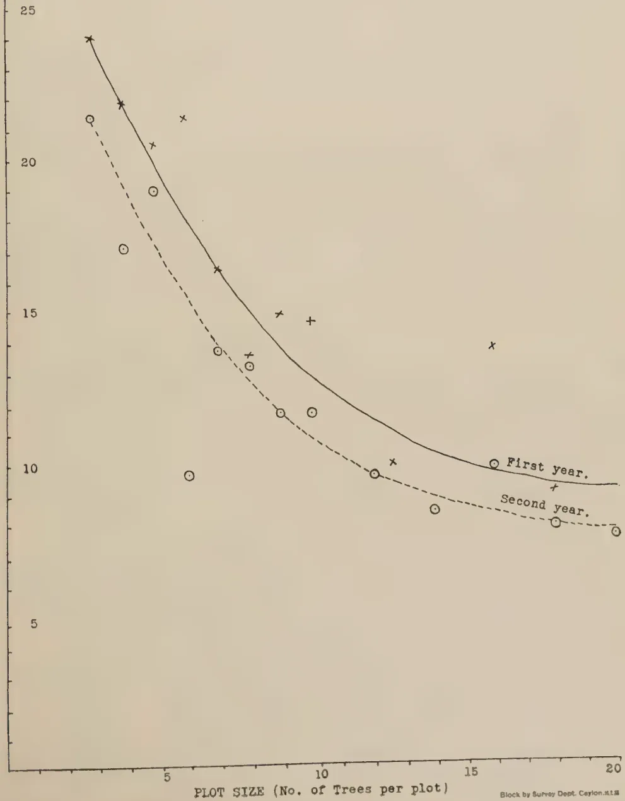

The
Tropical Agriculturist
August, 1937
EDITORIAL
NUTRITION
THE Advisory Committee on Nutrition appointed by the British Ministry of Health in May, 1935, has not completed the large scale inquiries which it initiated : but in view of the wide interest in the subject, the Committee has issued a preliminary report giving the results of a general survey of the field of investigation. From an examination of the modern discoveries of the physiological bases of nutrition, the committee derives certain conclusions which may be summarized as follows :
If the diet is unsuitable the body cannot be properly constructed, neither can it function properly.
A suitable diet must contain certain protective and constructive elements, mainly protein, fats, minerals, and vitamins.
The most satisfactory source of these elements is fresh milk.
This emphasis on the very great importance of fresh milk as a necessary part of the human dietary comes at a most opportune moment when Government has under consideration large schemes for the development of a sound animal husbandry. Peasants in the dry zone even now own cattle and can, with a little effort, draw the milk that their families require. Even in the more thickly inhabited parts of the country a grass plot of a quarter of an acre and one good country bred cow are not beyond the reach of the average family. But there is no
62evidence that the people utilize these opportunities for improving the nutritional value of their families' food. There is here both indifference and prejudice, indifference arising from a want of knowledge of the value of milk and prejudice that is born of the unscientific doctrines of ignorant medicine men. There are in the jargon of the oriental medical practitioners two words which may be literally translated as "cooling" and "heat producing." The former description is applied to cow milk and the latter to goat and buffalo milk. Only foods whose properties are intermediate between these two extremes are supposed to be normally good for the human system, and therefore milk is to be avoided. It is possible that this exposition of the principle of oriental medical science is erroneous. But there is no doubt that the resultant popular prejudice exists and that this prejudice goes far to prevent the general adoption of the use of milk as food.
It is most important that side by side with the Agricultural Department's efforts to make milk and animal produce generally more easily accessible to the people, active propaganda should be undertaken both to convince the people of the value of milk as food and to remove what amounts to a superstition. There is no hope that the adult will be easily converted. The school affords the most promising field of propagandist activity, and nothing convinces even the child so thoroughly as practical experience. A series of moderate-sized dairies attached to rural schools, largely worked by the older children, the milk from which the children themselves drink, will go further to improve the nutrition of the race than any other single step that the Government can take. The children will take with them not only the habit of milk consumption but also that of the care of animals : and these habits they in turn will transmit to their children.
63H. E. FOSTER
(STAFF OF IMPERIAL CHEMICAL INDUSTRIES (INDIA)
LTD., COLOMBO)
THE Experiment described in this article was laid down in November 1931 and had as its object the determination of the effect of nitrogen, phosphoric acid and potash on the yield of copra.
Location.—Kirimetiyana Estate, Chilaw District
Soil.—Light sandy loam having a pH value of 5.80
Average Rainfall.—80 in. per annum
Elevation.—28 ft. above sea level
Age of Palms in Experiment.—37 years
Layout.—4 × 4 Latin Square, each plot containing 5 × 5 = 25 palms. Spacing 30 ft. × 30 ft. One guard row of palms between each plot.
| Description of Treatment | Rate of Application of Fertilizer lb. per palm | N | P2O5 | K2O |
|---|---|---|---|---|
| A. Control .. .. | — | — | — | — |
| B. N. as sulphate of ammonia .. | 3.03 | .63 | — | — |
| C. N.P. as nicifos 22/18 .. | 3.5 | .63 | .63 | — |
| D. N.P.K. as nicifos 22/18 + muriate of potash | 3.5 1.3 |
.63 | .63 | .65 |
Time of Application.—Late November 1931 and every subsequent year.
Method of Application.—Half trenching system in 2 ft. wide trenches inside edge 6 ft. from base of palm,
64RESULTS OBTAINED IN 1932| Yield lb. Copra per 100 palms |
% Control | % General Mean |
Increase over Control |
Value of Increase (@*) |
Cost of Fertilizers |
Nett Profit per 100 palms due to Fertilizers |
% Return on Fertilizer Expenditure |
|
|---|---|---|---|---|---|---|---|---|
| A. .. | 3313 | 100 | 98.1 | — | — | — | — | — |
| B. .. | 3535 | 106.7 | 104.7 | 222 | 13.88 | 17.13 | -3.25 | — |
| C. .. | 3291 | 99.3 | 97.5 | -22 | -1.38 | 25.35 | -26.73 | — |
| D. .. | 3364 | 101.5 | 99.7 | 51 | 3.19 | 34.00 | -30.81 | — |
| S. E. .. | — | 2.0 | 1.96 | 66.3 | — | — | — | — |
| Significant Difference (P = .05) |
— | 6.9 | 6.8 | 229 | — | — | — | — |
*Rs. 35 per Candy of 560 lb. (the 1934 rate)
“Z” Test. Failed to pass at P = .05 level.
RESULTS OBTAINED IN 1933| Yield lb. Copra per 100 palms |
% Control | % General Mean |
Increase over Control |
Value of Increase (@*) |
Cost of Fertilizers |
Nett Profit per 100 palms due to Fertilizers |
% Return on Fertilizer Expenditure |
|
|---|---|---|---|---|---|---|---|---|
| A. .. | 3904 | 100 | 91.3 | — | — | — | — | — |
| B. .. | 4333 | 111.0 | 101.4 | 429 | 26.80 | 17.13 | 9.67 | 56 |
| C. .. | 4230 | 108.4 | 99.0 | 326 | 20.35 | 25.35 | -5.0 | — |
| D. .. | 4633 | 118.7 | 108.4 | 729 | 45.50 | 34.0 | 11.5 | 34 |
| S. E. .. | — | 2.57 | 2.35 | 100.5 | — | — | — | — |
| Significant Difference (P = .05) |
— | 8.9 | 8.1 | 348 | — | — | — | — |
*Rs. 35 per Candy of 560 lb. (1934 rate)
“Z” Test. Passed at P = .05 level.
RESULTS OBTAINED IN 1934| Yield lb. Copra per 100 palms |
% Control | % General Mean |
Increase over Control |
Value of Increase (@*) |
Cost of Fertilizers |
Nett Profit per 100 palms due to Fertilizers |
% Return on Fertilizer Expenditure |
|
|---|---|---|---|---|---|---|---|---|
| A. .. | 3596 | 100 | 83.1 | — | — | — | — | — |
| B. .. | 4219 | 117.3 | 97.5 | 623 | 38.90 | 17.13 | 21.77 | 127 |
| C. .. | 4424 | 123.0 | 102.2 | 828 | 51.75 | 25.35 | 26.40 | 104 |
| D. .. | 5069 | 141.0 | 117.2 | 1473 | 92.00 | 34.00 | 58.00 | 171 |
| S. E. .. | — | 2.80 | 2.33 | 100.86 | — | — | — | — |
| Significant Difference (P = .05) |
— | 9.7 | 8.1 | 349 | — | — | — | — |
*Rs. 35 per Candy of 560 lb. (1934 rate)
“Z” Test. Passed at P = .01 level.
65RESULTS OBTAINED IN 1935| Yield lb. Copro per 100 palms |
% Control |
% General Mean |
Increase over Control |
Value of Increase @* |
Cost of Fertilizers |
Nett Profit per 100 palms due to Fertilizers |
% Return on Fertilizer Expenditure |
|
|---|---|---|---|---|---|---|---|---|
| A. .. .. | 2653 | 100 | 86.9 | — | — | — | — | — |
| B. .. .. | 2983 | 112.4 | 97.7 | 330 | 27.10 | 17.13 | 9.97 | 58 |
| C. .. .. | 3142 | 118.4 | 102.9 | 489 | 40.17 | 25.35 | 14.82 | 58 |
| D. .. .. | 3439 | 129.6 | 112.6 | 786 | 64.56 | 34.00 | 30.56 | 90 |
| S. E. .. | — | 6.72 | 5.83 | 178.2 | — | — | — | — |
| Significant Difference (P = .05) |
— | 23.2 | 20.2 | 616.4 | — | — | — | — |
*Rs: 46 per Candy of 560 lb. (1935 rate)
“Z” Test. Failed at P = .05 level.
SUMMARYThe results obtained during the first four years of the experiment may be summarised as follows:
1932.—This was the first year of the experiment and it was not to be expected that any definite results would be obtained. No treatment produced a significant or profitable increase over control although nitrogen alone only just failed to produce a significant increase.
1933.—Nitrogen alone produced a very significant and profitable increase in yield. The addition of phosphate showed an insignificant tendency to depress the yield and its addition resulted in a loss. Potash in the presence of nitrogen and phosphate gave a very significant response and a complete application gave the highest nett profit.
1934.—Nitrogen alone gave a highly significant and very profitable increase in yield. The addition of phosphoric acid was without benefit. Potash produced a highly significant response and a complete application of N.P.K. gave by far the largest profit. The response to nitrogen and potash was very satisfactory but it appears doubtful if phosphate is required.
1935.—Owing to the droughty conditions experienced the increases obtained during 1935 were not as great as those of 1934, the standard of accuracy was lower and the experiment failed to pass the “Z” test. In consequence, no definite
66conclusions can be drawn from this year's results although they indicate that the complete mixture does give an increase.
AVERAGE RESULTS OF THREE YEARS 1933/35
| Yield Copra per 100 palms Lb. |
Increase | Value of Increase |
Cost of Fertilizers |
Nett Profit per 100 palms due to Fertilizers |
Percent- age Return on Fertilizer Expendi- ture |
||
|---|---|---|---|---|---|---|---|
| Lb. | % | Rs.* | Rs. | Rs. | Rs. | ||
| A. .. .. | 3384 | — | — | — | — | — | — |
| B. .. .. | 3845 | 461 | 13.6 | 28.81 | 17.13 | 11.68 | 68 |
| C. .. .. | 3932 | 548 | 16.2 | 34.25 | 25.35 | 8.90 | 35 |
| D. .. .. | 4380 | 996 | 29.4 | 62.25 | 34.00 | 28.25 | 83 |
| S. E. .. .. | — | 52 | 1.6 | — | — | — | — |
| Significant Difference (P = .05) |
— | 181 | 5.4 | — | — | — | — |
S.E. as % of General Mean = 1.01%.
“Z” Test. Treatments and seasons passed at P = .01 level.
Treatments and seasons interaction passed at P = .05 level.
*Copra.—Rs. 35 per candy of 560 lb. (1934 rate)
N.B.—Increases in heavy type were significant at P = .05 level
CONCLUSIONS
| Yield Copra per 100 palms Lb. |
Increase | Value of Increase |
Cost of Fertilizers |
Nett Profit per 100 palms due to Fertilizers Rs. |
Percent- age Return on Fertilizer Expendi- ture |
||
|---|---|---|---|---|---|---|---|
| Lb. | % | Rs.* | Rs. | Rs. | |||
| A. .. .. | 3367 | — | — | — | — | — | — |
| B. .. .. | 3768 | 401 | 11.9 | 25.06 | 17.13 | 7.93 | 46 |
| C. .. .. | 3772 | 405 | 12.0 | 25.31 | 25.35 | -0.04 | — |
| D. .. .. | 4126 | 759 | 22.6 | 47.44 | 34.00 | 13.44 | 40 |
| S. E. .. | — | 48 | 1.4 | — | — | — | — |
| Significant Difference (P = .05) } .. |
— | 165 | 4.9 | — | — | — | — |
S.E. as % of General Mean = 1.27%.
“Z” Test. Treatments and seasons passed at P = .01 level.
Treatments and seasons interaction passed at P = .01 level.
*Copra.—Rs. 35 per candy of 560 lb. (1934 rate)
N.B.—Increases in heavy type were significant at P = .05 level
CONCLUSIONSThe experiment is still in progress and it is hoped to publish further results in due course.
ACKNOWLEDGMENTThe writer wishes to acknowledge with thanks his indebtedness to Mr. C. J. R. de Soysa for kindly placing the necessary estate land at his disposal and also to Mr. A. J. C. Peiris for his valuable assistance and whole-hearted co-operation in conducting this experiment.
68H. JAMESON, D.Sc., F.R.Met.S.,
SUPERINTENDENT, COLOMBO OBSERVATORY
THE amount of moisture in the atmosphere is usually determined by simultaneous readings of dry and wet bulb thermometers, when the relative humidity, absolute humidity, and dew-point can be obtained from tables. Although this method is not of the highest degree of accuracy, the reading of the wet-bulb thermometer depending to an appreciable extent on the ventilation to which it is exposed, its convenience has brought it into general use.
The tables generally supplied are intended for use when the thermometers are exposed to a light breeze. The error due to incorrect ventilation is much greater, if the instruments are sheltered from all ventilation, than if they are exposed to a wind considerably greater than that for which the tables were computed.
There is a limit to the amount of moisture that can be contained in a unit of volume, this amount depending on the temperature only and increasing very rapidly as the temperature rises. For example, a rise of F., from F. to F. will double the maximum amount of moisture per unit volume. It is redoubled at F., and doubled again at F. Over ordinary atmospheric temperatures, it is nearly correct to say that the maximum amount of moisture increases in geometric progression as the temperature increases in arithmetical progression.
Relative, or percentage, humidity is the proportion, expressed as a percentage, which the actual quantity of moisture in any volume of air bears to the amount which could be contained in the same volume, if the air were saturated at the same temperature. When the actual moisture content of the
69air is unchanged, the relative humidity varies rapidly with the temperature. A moisture content that will give a relative humidity of 100 at 70° F. will only give 72 at 80° F., and 52 at 90° F.
The pressure exerted by water vapour in the air is approximately proportional to the actual water content per unit volume. This water content is therefore usually expressed by the pressure it exerts, in inches of mercury or millibars, and is known as the vapour pressure, or absolute humidity. The actual mass of water vapour per unit volume, at various temperatures and relative humidities, can be obtained from special tables, but approximate values in grains per cubic foot, or grammes per cubic metre, can be obtained by multiplying the vapour pressure, in inches of mercury, by 11 or 25, respectively, e.g., a vapour pressure of 1.000 inch is roughly equivalent to 11 grains of water vapour per cubic foot, or 25 grammes per cubic metre. At ordinary shade temperatures in Ceylon, both in the low-country and among the hills, this approximation should be correct within 5%.
A third method of expressing the humidity of the air is to give the dew-point, or the temperature at which the moisture actually present in the air would be just sufficient to saturate it. It is the temperature at which, if the air were cooled, dew would just begin to form, hence the name. The dew-point is obviously a function of the absolute humidity alone.
A fourth method of expressing atmospheric humidity, which as yet has not been very much used, is to give the saturation deficit. This is the amount of water-vapour per unit volume, generally expressed as a pressure, in inches of mercury or millibars, which would be required to saturate the air at the particular temperature at which it happens to be.
An example will perhaps make these various definitions clearer.
At sea-level the dry bulb temperature is observed to be, say, 86.2° F., and the wet bulb temperature 73.8° F. (It is necessary to specify the level at which the observations are taken, or the approximate barometric pressure, as, for given
70values of the dry and wet bulb temperatures, the values computed for these various humidity factors, depend to some extent, on the barometric pressures. However, tables at intervals of 2 inches of pressure, or 2,000 feet of altitude, are sufficient to allow for this variation).
We have a difference of F. between the dry and wet bulb readings. From the tables, the moisture in the air exerts a pressure of .665 inch of mercury, which is therefore the absolute humidity. This amount of moisture would be sufficient to saturate the air if the temperature were reduced to F. This latter temperature is therefore the dew-point. The amount of vapour that would be required to saturate the air at F. would exert a pressure of 1.249 inch. The relative humidity is therefore , or 53. The saturation deficit is , or .584 inch of mercury.
The rapidity of evaporation bears a much closer relation to the saturation deficit than to the relative humidity. In the low and mid-country of Ceylon, saturation deficit is usually high in the day-time, and may be an important climatological factor in the variations of agricultural, medical, or other biological phenomena. It is, of course, true that the rapidity of evaporation depends also on the wind, a factor which varies so much with small changes in locality that it is difficult to take it into account in this connection.
Saturation deficit, at any rate in Ceylon, shows much greater variations in the monthly means than either relative humidity or vapour pressure, and attempts to correlate it with other agricultural or medical factors may prove fruitful. In a paper now in course of publication,(1) monthly mean values of the saturation deficit have been given for the 16 principal meteorological stations of Ceylon, for each month over periods of a few years. Average monthly values are also given, for certain hours of the day. It is hoped that these tables may prove useful to investigators.
(1) Jameson, H. : Tables of Saturation Deficit for Ceylon. Ceylon, J. of Sc. (E) Vol. II, pt. 2
71J. C. HAIGH, Ph.D.,
GOVERNMENT ECONOMIC BOTANIST
A pure-line has been defined as a population in which the variability in an indefinite number of generations from seed is not greater than that in an indefinite number of vegetative generations. The definition has the merit of indicating plainly that variation does occur within a pure, self-fertilised crop, in which individual plants should not be regarded as being exactly alike, even though growing under uniform conditions.
The varieties of paddy that are recommended by the department are pure-lines, whose purity is maintained by bagging single plants so as to ensure self-fertilisation. It is a common practice, in order to minimise the possibility of foreign pollen falling on the stigma, to bag one of the first-flowering plants. Now paddy shows a plant-to-plant variation in the number of days required from sowing to flowering; the flowering period may extend over as much as 28 days, so that there are plants, in a pure-line crop, which will flower almost a month earlier than other plants in the same crop, when the total period between sowing and harvest may be no more than months. This variation must be due to differences in environment, and it is to be expected, since the same variation takes place each season, and since the plants are always grown under the same general conditions, that it will be immaterial, from what part of the crop seed is taken for the next sowing. Nevertheless, since the point is of some practical importance in the technique of the maintenance of purity, it was decided worthy of investigation.
From a field crop of Vellai Illankalayan growing in the maha 1934-35 season, three plants were selected, (1) the first
72to flower, hereafter called 'Early,' (2) a plant taken at random when the crop was adjudged to be "50% flowered"—hereafter called 'Medium' and (3) the last plant seen to flower, hereafter called 'Late.' The three plants were bagged to ensure self-fertilisation, and were harvested separately. Their seed was sown in small plots for the season yala 1935, and from each plot early, medium and late plants were bagged. In the maha 1935-36 season the process was repeated, this time in 9 plots, and the 27 lots of seed thus obtained were sown in small plots for the season yala 1936. From each of these 27 plots, records were made of the period between sowing and 50% flowering, and between sowing and harvest.
The data are presented in tabular form in tables I and II, and it is apparent that it is immaterial, to the age of the strain, whether it has been grown from seed produced early or late in the preceding generation. It follows that the practice of bagging the early flowers in a population can do no harm.
On the other hand, there is a definite danger in leaving bagging until late; a danger not of altering the "age" of the crop, but of failing to harvest viable seed. The only strains that have failed in this experiment have been bagged late at least once.
An experiment has been carried out to determine whether the variation in "age to flowering" in a pure-line crop is a normal variation, not inherited. By continuous selection of early-, medium- and late-flowering plants, it has been established that the variation remains the same in successive generations, and is a response to small differences in environment. This experiment is essentially the same as Johannsen's more famous one in which the variable factor was the weight of individual beans in a crop, and has given the same result.
73TABLE I| Strain | No. of days from sowing to 50% flowering |
No. of days from sowing to 50% ripeness |
|---|---|---|
| 1—1—1 | 123 | 174 |
| 1—1—2 | 123 | 174 |
| 1—1—3 | 123 | 163 |
| 1—2—1 | 142 | 184 |
| 1—2—2 | 126 | 174 |
| 1—2—3 | 126 | 170 |
| 1—3—1 | — | — |
| 1—3—2 | 126 | 174 |
| 1—3—3 | 126 | 170 |
| 2—1—1 | 123 | 174 |
| 2—1—2 | 123 | 174 |
| 2—1—3 | 123 | 174 |
| 2—2—1 | 123 | 174 |
| 2—2—2 | 126 | 174 |
| 2—2—3 | 123 | 174 |
| 2—3—1 | 134 | 181 |
| 2—3—2 | — | — |
| 2—3—3 | — | — |
| 3—1—1 | 123 | 174 |
| 3—1—2 | 134 | 181 |
| 3—1—3 | 123 | 163 |
| 3—2—1 | — | — |
| 3—2—2 | — | — |
| 3—2—3 | — | — |
| 3—3—1 | — | — |
| 3—3—2 | — | — |
| 3—3—3 | — | — |
| Control | 123 | 174 |
1=Early. 2=Medium. 3=Late.
Thus 1-2-3 means the progeny of a plant bagged early in the first season, at 50% flowering in the second, and late in the third.
For explanation of gaps, see next page.
74TABLE II| Season Maha 1934-35 |
Yala 1935 |
Maha 1935-36 |
Yala 1936 |
|---|---|---|---|
| ORIGINAL SEED |
PLANT BAGGED EARLY - 1 |
EARLY 1-1 | Early 123 days to flowering Medium 123 " " " Late 123 " " " |
| MEDIUM 1-2 | Early 142 " " " Medium 126 " " " Late 126 " " " |
||
| LATE 1-3 | Early Produced only empty seeds Medium 126 days to flowering Late 126 " " " |
||
| EARLY 2-1 | Early 123 " " " Medium 123 " " " Late 123 " " " |
||
| MEDIUM 2-2 | Early 123 " " " Medium 126 " " " Late 123 " " " |
||
| LATE 2-3 | Early 134 " " " Medium Produced only empties Late Died in seedling stage |
||
| EARLY 3-1 | Early 123 days to flowering Medium 134 " " " Late 123 " " " |
||
| MEDIUM 3-2 Seeds not properly filled |
Early Died in seedling stage Medium " " " " Late " " " " |
||
| LATE 3-3 Seeds empty |
Early Seeds did not germinate Medium " " " " Late " " " " |
1—only two plants survived at this stage
2—flowering and seeding abnormal, and lasted only one week
75W. V. D. PIERIS, M.A., Dip. Agric. (Cantab.), B.Sc. (Lond.),
GENETICIST
AND
M. L. M. SALGADO, Ph.D., Dip. Agric. (Cantab.), B.Sc. (Lond.),
SOIL CHEMIST, COCONUT RESEARCH SCHEME, CEYLON
PRIOR to laying down a manurial experiment on coconuts, two years' individual yield records kept on 300 palms in a block on Bandirippuwa Estate were statistically analysed in order to determine the optimum size of plot consistent with a minimum standard error. Reference has already been made in 1934 to the results obtained (1). In 1935 Joachim (3) published the results of a similar uniformity trial made at the Wariapola Experimental Station based on records kept during one year, and as our results covering a period of two years may be of general interest, it has been decided to publish them in detail.
The block on which the records were kept may be considered the best block on the estate, consisting of trees of uniformly the same age, with no vacancies or non-bearing palms, planted on a sandy loam overlying lateritic gravel. The entire block was nearly rectangular in shape, and uniformly cultivated, having been dug over with mamoties in 1931 and manured with a general mixture in 1933.
Individual records of the number of nuts from each tree of the block were kept, picking being done once in two months. At the time the data were analysed statistically, records for two years (from August, 1931 to June, 1933) were available. Though copra should form the basis of yield, the number of nuts is a sufficient criterion in a uniformity trial of this nature in view of the very high correlation found by Pieris (2) between the number of nuts and the weight of copra.
76METHOD OF ANALYSIS OF DATAThe area was divided into various plot sizes, ranging from 3-tree plots to 20-tree plots as shown in tables I, II and III. The 3, 4, 5, 6, 7, 8, 9, 10 and 12-tree plots consisted of single row plots; the 14-tree plots consisted of two rows of 7 trees each, the 16-tree plots of 4 rows of 4 trees each (and were square in shape) the 18-tree plots of 2 rows of 9 trees each, and the 20-tree plots of two rows of 10 trees each. It will, therefore, be seen that except for the 16-tree plots the usual plot shape was mainly rectangular.
The plots were grouped into randomized blocks (of the same shape corresponding to each plot size), and to each block was assigned at random a number of hypothetical treatments. These varied from three to four. The data were then examined by Fisher's method of the analysis of variance and from the statistical analysis the hypothetical treatment variance was compared with that of the experimental error by the tests of significance.
The standard errors corresponding to each plot size was calculated from the error variance, and later expressed as percentages of the mean plot yields as shown in table III. The standard errors corresponding to the two years were then separately plotted against plot size and curves fitted as shown in the graph. The optimum plot size consistent with a minimum standard error was determined from the point at which the curves flattened and showed no appreciable diminution of error by increasing the size of plot beyond sixteen trees.
DISCUSSIONInstead of the formal method of presentation of results of analysis of variance, the data have been summarised in tabular form in the interests of economy of space and for ease of comparison.
It will be seen from tables I and II, that except for the 12-tree plot of the first year, in no other instance are the treatment and error of variances found to be significantly different. The treatment variance is also subnormal in several cases.
On the other hand, the analysis reveals significant block variance in the case of the 8-tree plots and 12-tree plots for the first year, and in the second year in all except the 9, 18 and 20-tree plots,
77PLOT SIZE IN RELATION TO STANDARD ERROR.
(Expressed as % of General Mean).

The graph illustrates the relationship between plot size and standard error for two different years. The x-axis represents the number of trees per plot, ranging from 0 to 20. The y-axis represents the standard error as a percentage of the general mean, ranging from 5 to 25. The 'First year.' data is represented by a solid line with 'x' markers, and the 'Second year.' data is represented by a dashed line with 'o' markers. Both series show a decreasing trend as plot size increases, with the 'First year.' series consistently showing higher standard error values than the 'Second year.' series.
| Plot Size (No. of Trees per plot) | First year. Standard Error (%) | Second year. Standard Error (%) |
|---|---|---|
| 2 | 24 | 21.5 |
| 3 | 22 | 17.5 |
| 4 | 20.5 | 19 |
| 5 | 21.5 | 9.5 |
| 6 | 16.5 | 14 |
| 7 | 13.5 | 13.5 |
| 8 | 15 | 12 |
| 9 | 14.5 | 12 |
| 12 | 10 | 10 |
| 14 | 8.5 | 8.5 |
| 16 | 14 | 10.5 |
| 18 | 9 | 8.5 |
| 20 | 8.5 | 8 |
From table III and the diagram the diminution of the standard error with increasing plot size will be noted. It will also be observed that the two curves run parallel thereby indicating a general agreement in the nature of the results for two different years. The mean yields in the second year are larger than those of the first year, and the corresponding standard errors for the second year smaller than those of the first year. The mean yields are also nearly twice those recorded by Joachim (3), while the standard errors also show a corresponding difference.
The reduction in standard error is most marked up to the 9-tree plot size, but is not appreciable beyond the 16-tree size, and the curves flatten at about the 18-tree size. This plot size has been used as the optimum, as no advantage is gained by increasing the size of plot beyond 18 trees. This agrees with the conclusions drawn by Joachim (3). The standard error of this plot size is about 8 to 9 per cent. of the mean, compared to a value of 14 per cent. obtained by Joachim.
Even 18 trees represent nearly acre and as plots and blocks have to be separated by guard rows in manurial and cultivation experiments and economy in land is an important consideration, this may be considered the desirable size and has been adopted as the plot size in the manurial experiment laid down at Bandirippuwa Estate.
Thanks are due to Dr. T. Eden, Agricultural Chemist, Tea Research Institute for valuable advice and guidance in the statistical analysis; and Dr. R. Child, Director of Research, Coconut Research Scheme, for the interest taken in the work.
79
TABLE I
ANALYSIS OF VARIANCE — FIRST YEAR
| Size of Plot | Degrees of Freedom | Sums of Squares | (Mean Square) | Treatment vs. Error | Block vs. Error | |||||
|---|---|---|---|---|---|---|---|---|---|---|
| F | Variance | Z Calculated | Z Significant P=.05 | Z Calculated | Z Significant P=.05 | |||||
| 3-Tree Plots | Treatment | 3 | 5886 | 1962 | 44.29 | 1.48817 | .12285 | .5073 | .14694 | > .2654 |
| Blocks | 20 | 41173 | 2058.65 | 45.37 | 1.51226 | |||||
| Error | 60 | 92066 | 1534.4 | 39.17 | 1.36532 | |||||
| Total | 83 | 139125 | 1676.20 | |||||||
| 4-Tree Plots | Treatment | 3 | 1339.40 | 446.47 | 21.13 | 0.74809 | .81426 | > 1.0916 | .25621 | > .2654 |
| Blocks | 14 | 53220.33 | 3801.45 | 61.66 | 1.81906 | |||||
| Error | 42 | 95582.59 | 2275.79 | 47.70 | 1.56285 | |||||
| Total | 59 | 150142.32 | 2544.79 | |||||||
| 5-Tree Plots | Treatment | 3 | 6197.41 | 2098.71 | 45.81 | 1.52192 | .18827 | > 1.0716 | 0.29436 | > .3691 |
| Blocks | 11 | 60375.41 | 5488.67 | 74.08 | 2.00255 | |||||
| Error | 33 | 100516.09 | 3045.94 | 55.19 | 1.70819 | |||||
| Total | 47 | 167088.91 | 3555.08 | |||||||
| 6-Tree Plots | Treatment | 3 | 7110.46 | 2703.49 | 52.00 | 1.64866 | -.28532 | 1.0781 | 0.24327 | .4283 |
| Blocks | 8 | 62270.23 | 7783.78 | 88.22 | 2.17725 | |||||
| Error | 24 | 114839.54 | 4784.98 | 69.17 | 1.93398 | |||||
| Total | 35 | 184220.23 | 5263.44 | |||||||
| 7-Tree Plots | Treatment | 3 | 4544.31 | 1514.77 | 38.92 | 1.35893 | -.47031 | 1.0781 | 0.17075 | .4283 |
| Blocks | 8 | 43684.39 | 5460.55 | 73.89 | 1.99999 | |||||
| Error | 24 | 93126.94 | 3880.29 | 62.29 | 1.82924 | |||||
| Total | 35 | 141355.64 | 4038.73 | |||||||
TABLE I—Contd.
ANALYSIS OF VARIANCE — FIRST YEAR
| Size of Plot | Degrees of Freedom | Sums of Squares | (Mean Square) | Treatment vs. Error | Block vs. Error | |||||
|---|---|---|---|---|---|---|---|---|---|---|
| F | Variance | Z Calculated | Z Significant P = .05 |
Z Calculated | Z Significant P = .05 |
|||||
| 8-Tree Plots | Treatment | 3 | 7828.85 | 2609.62 | 51.08 | 1.63079 | -1.3343 > 1.0781 | .5950 | 0.61827 | .4894 |
| Blocks | 6 | 70059.71 | 11676.61 | 108.05 | 2.38249 | |||||
| Error | 18 | 61324.15 | 3406.897 | 58.37 | 1.76422 | |||||
| Total | 27 | 139212.71 | 5156.02 | |||||||
| 9-Tree Plots | Treatment | 3 | 20954.33 | 6984.78 | 83.57 | 2.12310 | .15096 | .5950 | 0.30410 | .5326 |
| Blocks | 5 | 47434.83 | 9486.96 | 97.40 | 2.27624 | |||||
| Error | 15 | 77460.17 | 5164.01 | 71.86 | 1.97214 | |||||
| Total | 23 | 145849.33 | 6341.28 | |||||||
| 10-Tree Plots | Treatment | 3 | 29524.16 | 9841.39 | 99.20 | 2.29455 | .22037 | .5950 | 0.39236 | .5326 |
| Blocks | 5 | 69329.83 | 13865.96 | 117.75 | 2.46654 | |||||
| Error | 15 | 94997.84 | 6333.19 | 79.58 | 2.07418 | |||||
| Total | 23 | 193851.83 | 8428.34 | |||||||
| 12-Tree Plots | Treatment | 3 | 50109.69 | 16703.23 | 129.24 | 2.55915 | .72497 | .6757 | 0.95447 | .6757 |
| Blocks | 3 | 79300.69 | 26433.56 | 162.55 | 2.78865 | |||||
| Error | 9 | 35269.06 | 3918.78 | 62.60 | 1.83418 | |||||
| Total | 15 | 164679.44 | 10978.62 | |||||||
| 14-Tree Plots | Treatment | 2 | 7693.9 | 3846.95 | 62.02 | 1.82487 | -24628 > 1.4819 | .6757 | 0.33177 | .6009 |
| Blocks | 5 | 61157.0 | 12231.40 | 110.58 | 2.40292 | |||||
| Error | 10 | 62953.5 | 6295.35 | 79.34 | 2.07115 | |||||
| Total | 17 | 131804.4 | 7753.20 | |||||||
81
TABLE I—Contd.
ANALYSIS OF VARIANCE — FIRST YEAR
| Size of Plot | Degrees of Freedom | Sums of Squares | (Mean Square) | Treatment vs. Error | Block vs. Error | |||||
|---|---|---|---|---|---|---|---|---|---|---|
| F | Variance | Z Calculated | Z Significant | Z Calculated | Z Significant | |||||
| 16-Tree Plots | Treatment | 2 | 51018.1 | 25509.05 | 159.72 | 0.46842 | .27060 | .7475 | -0.16061 | .8993 |
| Blocks | 4 | 48050.6 | 10762.60 | 103.75 | 0.03721 | |||||
| Error | 8 | 118812.6 | 14851.58 | 121.9 | 0.19782 | |||||
| Total | 14 | 212881.3 | 15205.81 | |||||||
| 18-Tree Plots | Treatment | 2 | 10813.2 | 5406.6 | 73.53 | 1.99511 | -1.8508 | 1.4808 | 0.56225 | .7798 |
| Blocks | 3 | 72342.7 | 24114.2 | 155.25 | 2.74244 | |||||
| Error | 6 | 46968.7 | 7828.12 | 88.48 | 2.18019 | |||||
| Total | 11 | 130124.6 | 11829.51 | |||||||
| 20-Tree Plots | Treatment | 2 | 20807.3 | 10403.65 | 102.0 | 0.01980 | -2.9501 | 1.4808 | 0.26180 | .7798 |
| Blocks | 3 | 95064.1 | 31688.00 | 178.0 | 0.57661 | |||||
| Error | 6 | 64555.4 | 10759.23 | 103.7 | 0.31481 | |||||
| Total | 11 | 180426.8 | 16402.44 | |||||||
83
TABLE II
ANALYSIS OF VARIANCE — SECOND YEAR
| Size of Plot | Degrees of Freedom | F | (Mean Square) | Treatment vs. Error | Block vs. Error | |||||
|---|---|---|---|---|---|---|---|---|---|---|
| Z Calculated | Z Significant P=.05 | Z Calculated | Z Significant P=.05 | |||||||
| 3-Tre Plots | Treatment | 3 | 6641.23 | 2213.74 | 47.04 | 1.54840 | 0.04122 | .5073 | 0.42318 | > .2654 |
| Blocks | 20 | 95010.95 | 4750.54 | 68.92 | 1.93036 | |||||
| Error | 60 | 122248.77 | 2037.479 | 45.14 | 1.50718 | |||||
| Total | 83 | 223900.95 | 2697.60 | |||||||
| 4-Tre Plots | Treatment | 3 | 1076.14 | 358.71 | 18.94 | 0.63874 | -0.93652 | 1.0716 | 0.44015 | > .3691 |
| Blocks | 14 | 95318.74 | 6808.48 | 82.51 | 2.11033 | |||||
| Error | 42 | 98068.85 | 2334.97 | 48.32 | 1.57526 | |||||
| Total | 59 | 194463.73 | 3296.0 | |||||||
| 5-Tre Plots | Treatment | 3 | 1168.83 | 389.61 | 19.73 | 0.67957 | -1.21414 | 1.0716 | 0.44015 | > .3691 |
| Blocks | 11 | 117119.17 | 10647.20 | 103.18 | 2.33386 | |||||
| Error | 33 | 145697.67 | 4415.08 | 66.44 | 1.89371 | |||||
| Total | 47 | 263985.67 | .6616.79 | |||||||
| 6-Tre Plots | Treatment | 3 | 6974.52 | 2324.84 | 48.21 | 1.57299 | 0.18994 | .5508 | 1.24390 | .4283 |
| Blocks | 8 | 153027.89 | 19128.48 | 138.31 | 2.62655 | |||||
| Error | 24 | 38157.23 | 1589.88 | 39.87 | 1.38305 | |||||
| Total | 35 | 198159.64 | 5661.70 | |||||||
| 7-Tre Plots | Treatment | 3 | 7674.75 | 2558.25 | 50.58 | 1.62097 | -0.29006 | 1.0781 | 0.51054 | .4283 |
| Blocks | 8 | 101513.39 | 12689.17 | 112.65 | 2.42157 | |||||
| Error | 24 | 109659.50 | 4569.14 | 67.60 | 1.91103 | |||||
| Total | 35 | 218847.64 | 6252.78 | |||||||
83
TABLE II—Contd.
ANALYSIS OF VARIANCE — SECOND YEAR
| Size of Plot | Degrees of Freedom | Sum of Squares | (Mean Square) | F | Variance | Treatment vs. Error | Block vs. Error | ||||||||
|---|---|---|---|---|---|---|---|---|---|---|---|---|---|---|---|
| Z Calculated | Z Significant |
Z Calculated | Z Significant |
||||||||||||
| 8-Tree Plots | Treatment | 3 | 32837.82 | 10945.94 | 104.62 | 2.34771 | 3 | 32837.82 | 10945.94 | 104.62 | 2.34771 | 0.34583 | .5753 | 0.64712 | .4894 |
| Blocks | 6 | 11992.72 | 1999.79 | 141.41 | 2.64900 | 6 | 11992.72 | 1999.79 | 141.41 | 2.64900 | |||||
| Error | 18 | 98654.43 | 5480.80 | 74.03 | 2.00188 | 18 | 98654.43 | 5480.80 | 74.03 | 2.00188 | |||||
| Total | 27 | 251484.97 | 9314.26 | 27 | 251484.97 | 9314.26 | |||||||||
| 9-Tree Plots | Treatment | 3 | 39338.46 | 13112.82 | 114.50 | 2.43796 | 3 | 39338.46 | 13112.82 | 114.50 | 2.43796 | 0.44887 | .5950 | 0.46082 | .5326 |
| Blocks | 5 | 67127.71 | 13425.54 | 115.87 | 2.44991 | 5 | 67127.71 | 13425.54 | 115.87 | 2.44991 | |||||
| Error | 15 | 80149.79 | 5343.32 | 73.09 | 1.98909 | 15 | 80149.79 | 5343.32 | 73.09 | 1.98909 | |||||
| Total | 23 | 186615.96 | 8113.74 | 23 | 186615.96 | 8113.74 | |||||||||
| 10-Tree Plots | Treatment | 3 | 56482.00 | 18827.33 | 137.20 | 2.61887 | 3 | 56482.00 | 18827.33 | 137.20 | 2.61887 | 0.51510 | .5950 | 0.55161 | .5326 |
| Blocks | 5 | 101268.83 | 20253.77 | 142.31 | 2.65538 | 5 | 101268.83 | 20253.77 | 142.31 | 2.65538 | |||||
| Error | 15 | 100807.5 | 6720.5 | 81.97 | 2.10377 | 15 | 100807.5 | 6720.5 | 81.97 | 2.10377 | |||||
| Total | 23 | 258558.33 | 11241.67 | 23 | 258558.33 | 11241.67 | |||||||||
| 12-Tree Plots | Treatment | 3 | 36983.19 | 12327.73 | 111.03 | 2.40720 | 3 | 36983.19 | 12327.73 | 111.03 | 2.40720 | 0.49587 | .6757 | 1.14031 | .6757 |
| Blocks | 3 | 134214.19 | 44738.06 | 211.51 | 3.05164 | 3 | 134214.19 | 44738.06 | 211.51 | 3.05164 | |||||
| Error | 9 | 41153.56 | 4572.62 | 67.62 | 1.91133 | 9 | 41153.56 | 4572.62 | 67.62 | 1.91133 | |||||
| Total | 15 | 212950.94 | 14156.73 | 15 | 212950.94 | 14156.73 | |||||||||
| 14-Tree Plots | Treatment | 2 | 16738.78 | 8369.39 | 91.48 | 2.21355 | 2 | 16738.78 | 8369.39 | 91.48 | 2.21355 | 0.12083 | .7058 | 0.83656 | .6009 |
| Blocks | 5 | 175104.95 | 35020.99 | 187.14 | 2.92928 | 5 | 175104.95 | 35020.99 | 187.14 | 2.92928 | |||||
| Error | 10 | 65726.55 | 6572.65 | 81.07 | 2.09272 | 10 | 65726.55 | 6572.65 | 81.07 | 2.09272 | |||||
| Total | 17 | 257570.28 | 15151.19 | 17 | 257570.28 | 15151.19 | |||||||||
TABLE II—Contd.
ANALYSIS OF VARIANCE — SECOND YEAR
| Size of Plot | Degrees of Freedom | Sums of Squares | (Mean Square) | Treatment vs. Error | Block vs. Error | ||||||
|---|---|---|---|---|---|---|---|---|---|---|---|
| F | Variance | Z Calculated | Z Significant P = .05 |
Z Calculated | Z Significant P = .05 |
||||||
| 16-Tree Plots | Treatment | .. | 2 | 80698.53 | 40349.27 | 200.87 | 0.69739 | 0.60864 | .7475 | 0.72601 | .6725 |
| Blocks | .. | 4 | 204054.26 | 51013.56 | 225.86 | 0.81476 | |||||
| Error | .. | 8 | 95522.14 | 11940.26 | 109.27 | 0.08875 | |||||
| Total | .. | 14 | 380274.93 | 27162.50 | |||||||
| 18-Tree Plots | Treatment | .. | 2 | 8436.17 | 4218.09 | 64.95 | 1.87104 | -0.40274 | 1.4808 | 0.63020 | .7798 |
| Blocks | .. | 3 | 99912.92 | 33304.31 | 182.49 | 2.90398 | |||||
| Error | .. | 6 | 56649.83 | 9441.64 | 97.16 | 2.27378 | |||||
| Total | .. | 11 | 164998.92 | 14999.90 | |||||||
| 20-Tree Plots | Treatment | .. | 2 | 22431.16 | 11215.58 | 105.90 | 0.05737 | 0.02667 | .8188 | 0.73216 | .7798 |
| Blocks | .. | 3 | 137944.66 | 45981.55 | 214.44 | 0.76286 | |||||
| Error | .. | 6 | 63812.84 | 10635.47 | 103.12 | 0.03070 | |||||
| Total | .. | 11 | 224188.66 | 20380.79 | |||||||
25
TABLE III
| Plot Size | 1st Year | 2nd Year | ||||
|---|---|---|---|---|---|---|
| Mean Yield of Plot. Nuts |
Standard Nuts |
Error of Plot. % of Mean |
Mean Yield of Plot. Nuts |
Standard Nuts |
Error of Plot. % of Mean |
|
| 3 Trees .. | 164.50 | 39.17 | 23.81 | 212.48 | 45.14 | 21.25 |
| 4 .. | 219.17 | 47.70 | 21.76 | 282.73 | 48.32 | 17.10 |
| 5 .. | 273.96 | 55.19 | 20.14 | 353.42 | 66.44 | 18.80 |
| 6 .. | 325.78 | 69.17 | 21.23 | 419.69 | 39.87 | 9.50 |
| 7 .. | 383.81 | 62.29 | 16.23 | 492.33 | 67.60 | 13.73 |
| 8 .. | 434.71 | 58.37 | 13.43 | 562.03 | 74.03 | 13.18 |
| 9 .. | 488.66 | 71.86 | 14.71 | 629.54 | 73.09 | 11.61 |
| 10 .. | 547.90 | 79.58 | 14.52 | 706.83 | 81.97 | 11.59 |
| 12 .. | 652.69 | 62.60 | 9.59 | 816.94 | 67.62 | 9.38 |
| 14 .. | 767.61 | 79.34 | 10.34 | 990.39 | 81.07 | 8.19 |
| 16 .. | 876.66 | 121.90 | 13.90 | 1130.93 | 109.27 | 9.57 |
| 18 .. | 977.38 | 88.48 | 8.85 | 1259.08 | 97.16 | 7.72 |
| 20 .. | 1095.83 | 103.7 | 9.46 | 1413.67 | 103.10 | 7.30 |
MALCOLM PARK, A.R.C.S.,
MYCOLOGIST
SPRAYING for the prevention or control of plant diseases is a relatively expensive practice. It should only be undertaken when other methods of control, such as the improvement of agricultural conditions, improvement of drainage and general sanitation or the adoption of a suitable crop rotation, are not likely to provide the satisfactory control of a disease. Again, the loss of crop or the extent of damage caused by a disease must be sufficiently great to warrant the expenditure on spraying. An exception to this might be made in gardens where the disfigurement of plants by fungus diseases may only affect their aesthetic value.
In tropical countries like Ceylon, where the temperature is always suitable for the development of fungi, humidity is often the main factor governing the incidence and spread of plant diseases. In consequence, in some parts of the Island it is necessary to spray regularly for the satisfactory control of many of our diseases. This fact should be appreciated before a spraying programme is undertaken since money spent on spraying is largely wasted unless the spraying is conscientiously done and repeated when required.
The function of a fungicidal spray is either to kill the fungus concerned or to prevent the attack by a protective action. According to their mode of action it is thus possible to divide fungicidal sprays into two groups: direct and protective.
*This note will be issued as Leaflet No. 116 of the Department of Agriculture
87Direct or eradicated fungicidal sprays kill through contact with the fungus on the plant surface. Such sprays are unfortunately of limited application since they can be used only against diseases in which the fungus is mainly on the outside of the plant. Diseases which come into this class are few, the chief being the powdery mildews, such as that which is common on orange trees. In spraying against these diseases, it is necessary only to spray when the disease first makes its appearance on the plants and to continue to spray only so long as the fungus causing the disease is alive and active.
The principle of a protective fungicidal spray is to deposit on the plant a film or layer of fungicide so that when the spores or seeds of the parasite fall on the surface of the plant they are killed before they can penetrate the plant cells and set up disease. It is obvious that protective sprays must be applied before the fungal infection is established or they are useless. Once a fungus has penetrated into the plant tissues no amount of fungicide deposited on the surface of the plant will cure the disease and consequently the excision or removal of diseased tissue should precede the inauguration of a spraying programme.
To provide complete protection, the film or layer of fungicide must be complete. Every part of the plant liable to infection must be covered. In spraying to control a leaf disease, for example, the upper and lower surfaces of every leaf should be sprayed completely.
A well-prepared and well-applied fungicidal spray will give a protective film on the surface of plants which will last for a considerable time. In plants where growth is continually taking place, spraying must be repeated at frequent intervals in order to ensure the protection of developing tissues. But it should be remembered that in these repeated sprayings it is necessary to spray only the developing tissues; the protective film will persist on the mature tissues. The intervals at which plants must be sprayed will depend not only on the suitability of the weather conditions for the spread of the disease but also on the manner in which the plant sprayed produces new growth. If new growth occurs at infrequent intervals, as when trees
88put on new bursts of foliage, the spraying need only be repeated as and when new shoots are developing and be continued until the new leaves have completed their development. (This applies, of course, only when the disease to be controlled is one affecting the leaves).
When applying the direct fungicidal sprays an endeavour should be made to wet thoroughly every part of the plant on which the fungus is observed. The fungicide must come into intimate contact with the fungus or it cannot kill it. The spray in this instance must therefore be in the nature of a drench and may be delivered from a coarse nozzle. In this respect its application differs from that of protective sprays.
Protective fungicidal sprays must be applied in the form of a fine mist. A fine mist of spray is obtained partly by the use of a suitable nozzle and partly by delivering the spray through the nozzle at a high pressure. In a fine mist of spray, the fungicide is dispersed into minute drops and the deposit of fungicide on the surface of the plant is more complete than with coarser sprays. The waste of spray is less when a fine mist is used. The ideal to aim at is to cover the plant with fungicide to such an extent that it just does not drip from the leaves. In practice, it will be found that it is best to spray until drops begin to fall from some of the leaves. The density of the fungicidal deposit is less when so much spray is applied that it drips from the plants than when it just does not drip. Excessive protective spraying is therefore not only wasteful but it is also less satisfactory than proper spraying.
Spraying should not be undertaken when plants are wet with rain or dew. The water present dilutes the spray fluid or prevents it from coming into contact with the surface and thus makes it less effective. Once the spray has dried on the plants rain will not wash it off to any great extent, provided that it has been properly prepared and applied.
Some sprays are inclined to scorch foliage if they are applied in bright sunshine. Spraying should therefore be undertaken if possible in the early morning, after the dew has dried, or in the late afternoon or on a dull cloudy day.
Spraying should not be done in a high wind if it can be avoided. If not, advantage should be taken of minor wind currents to see that both sides of the plants or trees receive sufficient spray.
89A. W. R. JOACHIM, Ph.D., Dip. Agric., (Cantab.),
AGRICULTURAL CHEMIST
EVEN the most casual observer cannot fail to be struck by the luxuriance of the vegetation of Ceylon, particularly of the wet zones. Most people would attribute this phenomenon to the natural fertility of the soil. In reality, however, our soils, taken as a whole, are by no means rich in mineral and organic plant food material. There are of course important exceptions. The reason for this prolific plant growth is to be sought in the favourable light, temperature and rainfall conditions generally experienced over the Island. Consequently carbon assimilation by the plant is at an optimum; so also is micro-organic and chemical activity in the soil, making quickly available the plant food present in or added to it as organic matter. As Ramann the noted German soil scientist remarks, "Most tropical soils are deficient in plant nutrients and are in great need of manures. The foliage, which falls continually throughout the year, decays rapidly and the liberated plant nutrients circulating very rapidly suffice for the great luxuriance of the tropical forest. On the whole, the tropical forest works with a small capital of nutrients and a rapid turn over." When, however, the equilibrium between soil and natural vegetation is disturbed by the destruction of the forest, the forces of soil deterioration quickly obtain ascendancy and in a few years the fertility of the soil is reduced to a level which makes the cultivation of crops unprofitable unless an intensive, rational system of agriculture is adopted. When this is not feasible, the only alternative is the abandonment of the land for such time as would permit of the regeneration of the soil by secondary vegetation. Hence the prevalence of chena or shifting cultivation in all tropical countries. Tennent as early as 1860
*A talk broadcast from Colombo on June 29th, 1937
90writes in regard to local soils, not without reason, that "the soil notwithstanding its wonderful display of spontaneous vegetation, is not responsive to systematic cultivation and is but imperfectly adapted for maturing a constant succession of seed and cereal crops." Experience has shown that most local crops require manuring if good yields are to be maintained, for, in Ceylon, as in other parts of the tropics, "the inexhaustible richness of tropical soils is but seldom found in Nature."
The environmental factors affecting soil character are climate, the nature of the parent rock, topography and to a lesser degree, vegetation. Climate is undoubtedly the predominant soil-characterizing factor in Ceylon. The high temperatures, and heavy precipitations alternating with periods of dry weather are eminently favourable for chemical weathering and the development of laterite (cabook) or lateritic soils from the crystalline rocks which constitute the main geological formation of the Island. In the process of laterisation the soluble bases are leached out, and a residual material rich in the hydrated oxides of aluminium and iron is left. Pure laterite soils must necessarily be infertile, but only rarely are they encountered in Ceylon. Most of the red to yellow soils so prevalent in both the wet and dry zones belong to the lateritic type. They are generally deep, well-drained loams with varying proportions of quartz and ferruginous gravel, of fair but variable organic matter and nitrogen contents, poor in available lime and other bases, and acid in reaction. They show, however, a marked variation in chemical composition which is governed in large degree by that of the parent rock. The granites and other acid crystalline rocks give rise to soils poor in lime but likely to be rich in potash, while those derived from the dark-coloured basic rocks tend to be poor in potash but of relatively high lime content. Of fair agricultural value, lateritic soils respond to good cultivation and are adapted for the growth of a variety of crops, mainly of the perennial type. They are well suited for tea and rubber, but with due attention to cultivation, coconuts, fruits, food crops, etc. can also be grown on them with fair success.
The geological nature of the parent rock bears a close relationship to the character of two important groups of local
91soils. This is best exemplified in the soils derived from Miocene limestone in the Jaffna Peninsula and the north-western part of the Island. They are deep, well-drained soils of brick-red colour and texture varying from light to heavy loams, rich in available mineral plant foods, mainly calcium and phosphoric acid, but poor in organic matter and nitrogen. Of the soils of the Island, these show the greatest response to cultivation with annual crops and fruits, provided they are adequately supplied with water and organic matter. In North Matale and other districts where crystalline limestone (mainly of the dolomitic type) outcrops, soils of a similar nature to the Jaffna calcareous red loams occur. Of no little importance from the soil standpoint are certain wind-borne "plateau deposits" of Pleistocene age which overlie the gneisses and crystalline rocks over the low-country. These often occur in two strata, the upper being a characteristic "red earth" of variable depth and the lower a gravel in a matrix of red clay. The former has given rise to the reddish sandy soils on which coconut thrives so well and to the white cinnamon soils, while the latter is the origin of the gravelly soils. The sandy soils, though of good physical condition for plant development, are deficient in nutrients and require supplementing with manures for optimum crop production.
The soils of the highlands and the paddy areas furnish the best examples of the effect of topography on the character of local soils. In the former, severe erosion caused by the heavy and intense rainfall has depleted the soils, for the most part, of the valuable surface soil with its accumulation of humus and mineral matter. This wash from the hills is deposited in the depressions and valleys where they form, under the influence of water movements, soils typically suited for paddy cultivation. Paddy is cultivated in Ceylon with varying degrees of success, on soils of wide textural range from clay loams to light sandy soils. They vary as widely in chemical composition and reaction. The heavy loams of no small extent in the dry zone forests, are by far the best types of paddy soils in the Island. Topography by its influence on soil water movement, is also the determining factor in the formation of the low-lying, acid, peat soils to be found in certain paddy and gemming areas.
92The influence of vegetation on soil type in Ceylon is clearly seen in the patanas (grasslands) of the Central and Uva Provinces and the kekilla (fernlands) of Sabaragamuwa. Unlike most tropical soils which are generally poor in organic matter (the climatic conditions being more favourable for its decomposition than its accumulation) these soils have a surface layer of dark humic material of variable depth. Into their origin it is not my purpose to enter, but there is good evidence that some of these areas, at any rate, have resulted through man's interference with the natural forest vegetation. The patana and kekilla soils are, as would be expected, rich in organic matter and nitrogen, acidic in reaction, and poor in bases. They overlie red or yellow laterite and lateritic soils. Like the latter they are mainly suited for acid-preferring, perennial crops, e.g., tea and rubber, but on the patanas certain vegetables can be grown successfully.
Ceylon soils may therefore be classed into five groups each with characteristic properties of its own. They are: (1) the laterite and lateritic red and yellow earths of the wet and dry zones, (2) the limestone-derived soils of the Jaffna and North Matale series, (3) the sandy and gravelly soils derived from Pleistocene plateau deposits, (4) the alluvial paddy soils, and (5) the patana and kekilla vegetation soil types. These soil classes exemplify the influence in varying degrees of one or more of the major environmental factors responsible for soil development and character generally. Taken as a whole Ceylon soils are poor in organic matter, available lime and phosphoric acid, but fair in nitrogen and potash. Our crops are therefore generally deficient in calcium and phosphorus except in areas like Jaffna where limestone occurs. Provided climatic conditions are not the limiting factor, there is a fairly close correspondence between the nature of local soil groups and the system of agriculture practised. Whatever their nature, our soils constitute the primary source of prosperity of the country, and it is a duty we owe to posterity no less than to ourselves to preserve this natural wealth by every means in our power.
93THERE are few species of plants which have received so many scientific names as have been bestowed on Robusta coffee. It has been shown by Chevalier that the correct name for this group of coffees should be Coffea canephora Pierre, which was the name under which the species was first described; all the other names applied for forms of this coffee—C. robusta, C. Laurentii, C. arabica var. Stuhlmanii, C. bukobensis, C. Maclaudi, C. ugandae—refer to varieties of the species. Not only do the forms differ on account of genetical reasons—a group of wild coffee in the forests usually comprises many different types—but also the appearance of any one type will vary greatly according to environment: a plant which in the forest is tall, with large flat leaves and few flowers, when grown in the open may be stunted with small furrowed leaves and many flowers; even on a single tree there may be great differences between the small, narrow leaves at the top of the tree in the light and the large broad leaves in the shade below.
In many of the forests of Uganda this coffee occurs wild, sometimes in such abundance as to be the dominant plant in the undergrowth. The plant has been cultivated by the natives for some considerable time. Speke, in writing of his arrival at Masaka in 1861, mentions the coffee: "This grows in great profusion all over the land in large bushy trees, the berries sticking on the branches like clusters of holly berries." The coffee was not used by the natives as a beverage, but for chewing, for which purpose the cherries are picked before they are ripe, boiled and dried.
In some places the native coffee industry was quite important; for example, on the Sese Islands in Lake Victoria, whence considerable quantities were exported to the mainland.
When coffee-planting by Europeans was commenced in Uganda, at first only Arabica coffee was planted; but about 1910 seed of Robusta coffee was introduced from Java, and most of the Robusta coffee planted on European estates up to the present has been derived from this imported type.
In Uganda it is customary to divide the Robusta coffee into the two classes: firstly, Robusta derived from seed imported from Java, and secondly,
*By A. S. Thomas, Assistant Botanist, Uganda, in The East African Agricultural Journal, November, 1935
94Nganda, derived from the seed of native coffee. Usually the Robusta types form erect bushes, with a few main stems, while the Nganda types form large spreading trees, with many branches to the main stems ; there are frequent exceptions—some old Robusta trees assume the spreading habit, while many of the native forms are erect.
The erect Robusta types have certain advantages : their growth is more rapid than that of the spreading type, and the trees commence to fruit early, usually producing the first crop two years after planting : also, in many cases the size of the bean is larger. When given good cultivation these trees are very satisfactory, but if they are at all neglected they soon exhibit symptoms of die-back ; after a short time nothing is left but erect bare stems with a few short primaries at the top carrying yellow leaves and very few fruits. This type is usually pruned on the multiple stem system, with three erect branches from ground level, these branches being renewed in succession as the lower primaries die off and the fruiting primaries become too high for convenience in picking.
The spreading Nganda trees are slower in growth and seldom set much fruit until three years after planting. But it is this slow growth which enables the tree to assume a spreading habit ; if the branches of the erect quick-growing Robusta types are bent over they usually break off at ground level, but the wood of the slower Nganda types is much tougher and is not easily broken ; in fact, it is the usual custom for the natives to climb up and stand on the branches of large Nganda coffee trees when gathering the fruit.
In actual practice the spreading habit is very useful ; many Nganda trees have a spread of twenty or twenty-five feet, and thus they cover a considerable area of ground around the base of the trunk, and for most of the year this ground is under relatively dense shade. This shade inhibits the growth of weeds and especially of grasses, which have a specifically bad influence on the growth of any crop. That these large trees can in fact exist without any cultivation was shown on the Sese Islands which, on account of sleeping sickness, were evacuated from 1912 until 1924, yet when the inhabitants returned, they found many of the old coffee trees still flourishing. Such control of weed growth has an important bearing on soil erosion : there is no necessity to disturb the soil, and in consequence the coffee feeding roots form a dense mat very close to the surface, holding the soil in place ; whereas, when the soil is hoed to kill the weeds, these coffee roots are cut off, the soil is loosened, and considerable wash may take place.
Another important function of shade is the control of soil temperature. It has been found at Kampala that on a hot afternoon the temperature at a depth of two inches of soil under shade may be as much as C. less than the temperature of unshaded soil at the same depth. Not only does this difference affect the growth of the coffee roots—a temperature of C. has been recorded in the open, which is certainly in excess of the optimum for plant growth—
95the shading and the consequent lowering of temperature must also have a considerable effect on the soil itself; for example, in retarding the rate of oxidation of organic matter in the soil, a process which is usually excessively rapid in the tropics.
Very little pruning is given to these spreading trees in the usual native practice. About one year after the seedling is planted, when it is two or three feet high, the stem is bent over and tied down with a strip of banana fibre to a stick or a heavy stone. As a result of this bending, two or three other branches arise near ground level, and these in turn are tied down in different directions radiating from the main stem. When the tree commences to fruit, the weight of the crop pulls the branches outwards; if the centre of the tree becomes open, more branches arise there, and these in turn are trained outwards. The labour that is involved in these operations is very small in comparison with that entailed by any system of pruning. The simplicity of the method makes it particularly suitable for native cultivators, but probably it would be well worth while to try it on European estates as well, since Robusta coffee is a low-priced crop and it is essential to keep the cost of production as low as possible; an end which may be attained by the great reduction in the labour of pruning and cultivation of large spreading trees as compared with that of smaller erect bushes.
Various local terms are given to the trees by natives, some of them very apposite; for example, near Katera, in the Masaka district, there is a very old tree, whose reputation for heavy cropping is such that it is known as Narongo, which is the name for a woman who bears twins. Many of these terms are purely local, but others are widespread; of these three may be mentioned:
Makonde, a type of spreading Nganda tree, with fruits larger than usual, which is grown on the Sese Islands.
Namata, a spreading type, whose berries are a dull orange colour when ripe, not red, as is usually the case.
Musenzalanda, an erect type, whose lower primaries are very long and branching, and therefore give the tree a conical shape; the base may be as much as eight feet across. This, like the spreading habit of the Nganda types, has the advantage of shading the ground, but it has the disadvantage that many of the lower berries are hidden and that therefore the fruit is hard to pick.
The main qualities on which selection of Robusta coffee in Uganda is based are vigour (which includes resistance to disease), yield, and size of bean. Various liquoring tests on Robusta coffee would seem to show that quality depends more on the soil in which the coffee is grown and on the methods employed in the preparation of the bean than it does on any genetical factors.
With regard to vigour, in Uganda we are fortunate in possessing a number of large old Nganda trees which have flourished for a long time on native
96farms ; such trees furnish excellent material on which to commence selection, for it is an established principle in plant breeding that the largest range of forms of a plant is to be found in the countries to which it is native. Some of the trees are very old indeed : for example, there is one on the Sese Islands which is almost certainly over a hundred years old. Its trunk has a circumference of inches at a height of one foot above the ground, and this tree still produces good crops, with beans which are above the average in size. These old trees have not received much attention : no help is given to them in the way of cultivation or manuring ; in fact, some of them are near houses, and the ground beneath them is swept bare every day, and yet the trees remain healthy and crop well. After such trees have fruited heavily, often they lose some of their leaves, and mild attacks of Hemeleia vastatrix may occur, but after a few months the tree will be again in full dark green leaf, with scarcely a spot of disease to be seen.
Yield, obviously, is of the greatest importance, and again it is highly desirable to use as mothers trees which are of mature age, for it is common experience that some coffee trees, and especially those of the erect Robusta type, will bear one or two heavy crops and then die off. It is seldom possible to obtain exact figures of yields from trees which are scattered over the countryside, but it has been found that crops of from fifty to one hundred pounds of coffee in parchment are not infrequent from these big old trees. All that can be done is to visit the trees as frequently as possible and make notes on the size of the crop, the condition of the tree, and the prospect of the next flowering ; some trees have been under such observation for five years, and it is found that often there is marked biennial bearing. The shape of the tree may be a guide to its cropping powers ; heavy yielders often have a large spread owing to the fact that the branches have been pulled down by the weight of the crop. There is another notable individual tree in the Masaka district which has a height of only about six feet, but a spread of twenty-six feet : in 1934, this tree produced about one hundred pounds of coffee in parchment.
As Robusta coffee is sold largely on the basis of appearance, and there is a distinct preference for bold samples, the size of the bean must be regarded. In this respect many of the native coffee trees are at fault, as they produce beans which are distinctly smaller than those of ordinary Robusta coffee, but out of the hundreds of trees that have been examined it has been possible to select many whose beans are distinctly larger than those of ordinary Robusta. It is hoped that the progeny will mostly inherit this character, but that is by no means certain ; for example, there is a tree at Kinawa, near Kampala, with beans averaging about 0.193 gm. in weight, but whose progeny produced beans averaging from 0.053 gm. to 0.184 gm. Again, in this connection, the advantage of having old trees to breed from is very great, as it is well known that the bean of the first few crops from a coffee bush is usually much bolder than that of successive crops.
97The liquoring quality of coffee, and the factors on which it depends, present many problems. Numerous trials have been made by submitting samples of Robusta and Nganda coffee to brokers. Somewhat contradictory reports have been received, but it would seem that all the types of Robusta coffee with a good-sized bean, if properly prepared, would be saleable. For example, a report from London on Sese Islands coffee prepared by natives stated that "Both these samples of coffee from the Sese Islands are of marketable quality," and a report from New York on samples of Robusta and Nganda coffee was that "As a matter of fact, all these coffees have the same general character in the same way that all Java Robustas have the same character . . . and all of those sent would be saleable in this market." Of course, the final test of the value of any coffee selection is by the value of its progeny, and to that end progeny rows of many of the selections are being laid down. There is in existence at Kampala a plot of many progeny rows, and further batches are now being established at Kawanda, near Kampala. Individual tree records are being kept; the size of the cherry and of the bean is being measured. In a few instances the work of breeding has been greatly assisted by the discovery on native farms of plots of coffee which are the progeny of one tree, for a considerable amount of selection has been practised by the natives. From these plots a very much sounder conception of the value of a strain is obtained than is given by the inspection of a single tree.
One considerable difficulty has been found—that it is hard to assess the ultimate value of a tree by the first few crops; in selecting mother trees an attempt is made to include none under ten years old. It is not possible in ordinary breeding work to allow so long a time for each generation, therefore re-selection is based on the record of crop, the size of the bean, and the general appearance of the tree. Certain vegetative characters seem to be a good guide to the value of a tree; for example, the possession of stout-branched primaries.
Self-pollination of branches enclosed in sleeves of mosquito-netting has been tried and, contrary to experience in other countries, it has given an appreciable set of crop, both in 1934 and in 1935, ranging from 45 per cent. to 6 per cent., as contrasted with the average of 0.5 per cent. in Java reported by Ferwerda. This degree of self-fertility will be of great advantage in breeding work, and it does appear to be common in Uganda, for one may see quite isolated large old Nganda trees bearing heavy crops. Several of the strains selected in Java are being grown, and it will be of great interest to see whether these may not prove to be more self-fertile in Uganda, a country which is one of the homes of Robusta coffee, than in the Dutch East Indies.
98BOTANY is the most important of all sciences, and plant pathology is one of its most essential branches. The statement is hyperbolic, of course, but it is not mere bombast. For man still is basically dependent on plants for subsistence. Plants are the sole creators of food and clothing materials; man and other animals are merely cultivators, transformers, processors or purveyors. When we consider the manifold additional uses of plants and plant products, including their service in building and conserving soil, in controlling floods and in increasing the esthetic enjoyment of life, the assertion in the first sentence could at least be defended in argument. At any rate it is well to remind ourselves occasionally that human subsistence is dependent on plants and that the number of people that can exist in the world is limited by its agricultural and aquicultural potentialities.
If plants are essential, it follows that their protection also is of paramount importance. Plants need protection against unfavourable soil and weather, against certain industrial by-products, against insect pests, against diseases caused by bacteria, fungi, eel-worms and other living organisms, and against filterable viruses. Crop plants may be severely damaged or commercially ruined by any of the above causes. It would be desirable but hardly feasible within reasonable limits, to discuss the devastation caused by all these factors. Therefore, this discussion is restricted principally to plant diseases caused by plant parasites, except in so far as other factors must be taken into consideration in controlling them.
Ever since the dawn of recorded history plant diseases and insect pests have been among the greatest hazards in the production of crop plants, and they still are. It has been estimated that insect pests cost the people of the United States approximately a billion dollars annually, and plant diseases are about as costly. Plant pathologists and entomologists often are ridiculed for their allegedly extravagant estimates of damage caused by diseases and pests. But any one who has seen the devastation caused by epidemics of black stem rust of wheat and other small grains, by late blight of potatoes, by grasshoppers and by many other diseases and insects must be profoundly impressed with the magnitude of the financial losses, the tragic consequences
*By Dr. E. C. Stakman, Professor of Plant Pathology, University of Minnesota; and Agent, United States Department of Agriculture, in The Scientific Monthly, Vol. XLIV, February, 1937
99to farmers and the far-reaching sociologic and even political implications of such crop catastrophes.
While the control of insect pests is not primarily a botanical problem, the relation of insects to many plant diseases is so important that a discussion of plant protection would not be complete without at least brief reference to it. Insects are the principal or only agents of dissemination and inoculation of many plant pathogens. In popular language, insects are tremendously important in spreading plant diseases. They are responsible for the spread of some of the most destructive virus diseases, such as curly-top of sugar-beets, aster yellows, sugar-cane mosaic, raspberry mosaic and many others. They also are largely or wholly responsible for the dissemination and inoculation of the bacteria or fungi that cause rots of potatoes and other vegetables, pear blight, the Dutch elm disease, wilt of cucumbers and related plants, and certain wood stains and rots of felled timber. So important are insects in connection with many plant diseases that disease control becomes a joint entomological and botanical problem. And the protection of crop plants against many insect pests themselves may well be accomplished by botanists through the breeding of resistant varieties. This method of controlling insects has not been used extensively, but there is evidence that it may become very important. Modern botany can promise much for the control of certain insects, but close co-operation between entomologists and botanists can promise still more.
How important is it to protect plants against diseases? Far more important than often is supposed. In a Mayo Foundation lecture several years ago Professor Whetzel pointed out that one-third of the sweet potato crop of the United States is destroyed annually by diseases in the field or in the storage house, "one bean in every dozen, one apple in every seven, one peach in every eight, one bushel of Irish potatoes in every twelve, and one bushel of wheat in every ten, are destroyed annually by diseases in these crops." It is stated further that certain potato growers in Pennsylvania have increased acre yields of potatoes between 300 and 500 bushels over the average of the state by using disease-free seed and by spraying. In Minnesota, a number of years ago, yields of potatoes were increased by 160 bushels an acre in demonstration plots through the use of disease-free seed. Yields of wheat have been almost doubled in experimental plots dusted with sulphur to control rust. The terrific stem rust epidemic of 1935 destroyed 12 per cent. of the wheat in Kansas, 15 per cent. of that in Nebraska, about 30 per cent. of that in South Dakota and about 60 per cent. of that in Minnesota and North Dakota. The total toll taken by rust in that one year was more than 125,000,000 bushels. The terrible devastation over thousands of square miles can scarcely be realized by any one who has not seen it himself. And epidemics of other diseases can be equally destructive over considerable areas. Thousands of acres of sugar-beets are periodically abandoned because of the ravages of the curly-top disease; the chestnut blight has practically destroyed the chestnuts of
100the United States : and the Dutch elm disease is now menacing one of our finest shade trees. And these are only a few examples. Surely the protection of plants against diseases is of national concern.
Fundamental to crop protection is better crop adaptation. Just as nature has selected ecotypes of native plants, that is, strains particularly suited to certain soil and climatic conditions, just so must the crop ecologists or breeders select strains of crop plants that are particularly suited to certain environmental conditions. For drought, excessive summer heat and winter cold are grave hazards for crop plants. Their destructive effects are both direct and indirect. Several million acres of winter wheat are abandoned each year because of winter injury ; about 15,000,000 acres, or one-third of the total planted, having been abandoned in 1933 ; fruit trees are periodically killed or severely injured by cold, and during the drought years of 1933 and 1934 about a billion bushels of corn were destroyed by heat and drought. The weather cannot be controlled, but its destructive effects can be reduced by developing adapted varieties and by the use of suitable cultural practices. Much has already been accomplished. The substitution of Crimean wheats for Mediterranean types in the Southern Great Plains area has greatly reduced losses from unfavourable weather ; the development of Minturki wheat has made winter-wheat growing safer on the northern fringe of the winter-wheat region ; the development of Ceres wheat has reduced somewhat heat and drought injury in the northern spring-wheat region ; the development of early maturing varieties of wheat and corn has reduced danger of damage by early frosts ; and the development of stiff-straw varieties of small grains has reduced the danger of lodging on soils where it was common. But far more can and should be done. When we consider the terrific losses of recent years, the need for varieties still better adapted to resist unfavourable weather and soil conditions is apparent. And past progress indicates the possibility of greater accomplishment for the future. But superior varieties are not plucked out of a hat by tricks of legerdemain ; they are the result of long and painstaking and laborious sorting and breeding and testing. The breeding of better adapted varieties is not a pastime for botanists in their spare moments. It requires time, labour, skill and adequate facilities.
Crop adaptation also is an aid in controlling some plant diseases caused by pathogens, particularly those that attack weakened plants. For unsuitable environment often predisposes plants to insidious but destructive diseases. Certain root rots of cereals, for example, are most destructive to plants weakened by unfavourable environment. Canker fungi and wood rots are likely to attack fruit trees that have suffered winter injury. There even is evidence that resistance to stem rust may be lowered when normally resistant wheat varieties are grown under environmental conditions to which they are unsuited. It is becoming increasingly evident that plant disease resistance is a variable character that is governed not only by genetic factors but also
101by environment : hence, the importance of having varieties well adapted to local soil and climatic conditions. While this is especially true of long-time perennial crops, it is true also of annual crops. Some European countries have long recognized the necessity of breeding locally adapted varieties, and there appears to be increasing appreciation of its importance in the United States. The desire for standardization, however, sometimes has resulted in growing varieties under conditions to which they are not suited. The breeder of locally adapted varieties can contribute significantly to plant protection.
A primary obligation of botanical science is to help promote what may be termed plant public health. And one way of accomplishing it is by preventing the promiscuous interchange of dangerous plant pathogens between regions and countries. This requires more knowledge, better techniques and better social attitudes. There are those, of course, who are opposed to plant quarantines on the ground that they are unnecessary or ineffective. But surely one can scarcely contemplate with serenity the devastation caused by chestnut blight, the total cost of citrus canker in Florida and other Gulf States, the economic importance of white pine blister rust, and the menace of the Dutch elm disease to our finest shade tree. These diseases are caused by pathogens that were brought into the country by man and could have been excluded by quarantines. And they are only a few of the total, to say nothing of introduced insect pests. When one reviews the history of many of the most destructive diseases, it is astounding to find how many of them have attained their present status through the activity of man himself. Many of them originally were restricted in importance and geographic distribution ; they could not have crossed natural barriers such as high mountain ranges, oceans, and even crop barriers, by natural means. But man, because of ignorance, apathy, carelessness or lack of foresight, did what nature could not do. He carried them to the far corners of the earth, where they often have persisted in their most pernicious form.
There is great potential danger in transporting propagative parts of plants from one part of the world to another, because a disease may be far more destructive in a new region than in one where it has long existed. The varieties grown in the new region may be far more susceptible than in the region where the disease has long been prevalent, or the weather and soil conditions may be more favourable. Because a disease is relatively unimportant in one region is no guarantee that it will be unimportant in all regions. The chestnut blight is far more destructive in North America than in its original home in the Orient because the American chestnut is very much more susceptible to it than oriental species. Citrus canker was not recognized as a destructive disease until it found extremely favourable conditions in its new home in Florida. Plant breeders repeatedly have developed disease-resistant varieties of crop plants, only to see them succumb to new parasitic
102racies of the same pathogen which may have been introduced from other regions. The danger of introducing new strains of a pathogen is well illustrated by the fact that Anthony oats is fairly resistant to stem rust in the United States but completely susceptible in certain areas of Northern Europe, merely because different races of the stem rust fungus prevail there. There are similar situations with respect to other rusts, smuts and other destructive pathogens. Surely there is ample evidence that quarantines are desirable if they can be made effective.
Can quarantines be effective? The question cannot be answered categorically. Obviously, the success of any quarantine will depend on the method of dissemination of the pathogen involved, on the nature of the barriers between the area where the disease occurs and the area to be protected and on the adequacy of the quarantine organization. Obviously there should be a scientific basis for every quarantine. This often has been lacking, and things have been done, that need not have been done, and things have not been done that should have been done. The quarantine on Maine potatoes, about twenty years ago, because of powdery scab was costly, but it was neither effective nor necessary, because the disease already was present in one region that the quarantine was designed to protect and could not develop destructively in another because of unsuitable environment. It was a mistake. But whose fault was it? Not the quarantine organisation's! Their action seemed justified on the basis of the available information, but there was not enough information available. The fault was with those who failed to provide for adequate plant disease surveys. And one reason clearly was the difficulty of overcoming the inertia or resistance of many people who refused to consider seriously what might happen but only what had happened. There is serious danger in having thoughts rooted too deeply in the immediate present or in the past.
Practical botanical science must project itself more into the future; and to do so it must not be too practical. For science surely has the obligation to forecast the future, not only to explain the past and present. Observations and researches should be made to find out where potential as well as present danger lurks. This can be done only by studying diseases over as wide a territory as is necessary, whether domestic or foreign. Domestic plant disease surveys are essential from a number of standpoints. Unfortunately, however, their value often is not recognised. It is pertinent to ask how plant pathologists can be expected to meet new situations, to interpret old ones and to prepare for future emergencies if they do not have opportunity to make adequate studies of diseases as they exist and factors influencing their distribution and development. Plant diseases survey studies, ecologic studies, are among the most important in the whole realm of plant protection, and yet we often are so myopic as not to appreciate their value and provide for their support.
103In addition to domestic plant disease surveys every country should interest itself in the diseases of other countries, especially those that grow the same kinds of crops. Information should be obtained regarding the methods of effective dissemination and the effects of the parasitic races of the foreign pathogen on the crop varieties and under environmental conditions similar to those of the country to be protected. Only when such information is available can the most adequate and intelligent quarantine action be taken. When we consider our own experience with chestnut blight, citrus canker, white pine blister rust and the Dutch elm disease, and the experience of many foreign countries with other diseases, we can scarcely avoid the conclusion that quarantines are essential; and, when we consider certain other cases, we must admit that unfortunate mistakes have been made in their application. The remedy, however, is not wholesale condemnation, but improvement through the results of research. And the research must precede practice, not lag behind it and do the second guessing.
The principles that apply to quarantines apply equally to eradication campaigns. Unfortunately, even some botanists still maintain a scornful or sceptical attitude toward large-scale eradication as a control measure. This was true also of many medical men when medical science entered the field of public health. If it is considered demeaning for botanists to assume leadership in plant public health measures, at least no one needs demean himself unless he chooses. Every scientist has a right to his scepticism, but he also has the obligation to study each situation honestly and thoroughly before pronouncing destructive dicta ex cathedra.
Some eradication campaigns have succeeded; others have failed. Some have been modified with respect to aim and scope; others were carried out as originally conceived. The difficulty is that emergency or public demand precipitated some of them before scientists were ready to supply the best techniques or accurately to predict the probable outcome. The chestnut blight eradication campaign failed; the citrus canker eradication campaign in Florida was conspicuously successful. The white pine blister rust campaign was not successful in completely eradicating the disease from the United States, but it has been eminently successful in controlling the disease for practical purposes in New England and the Lake States. The barberry eradication campaign has been successful in eliminating a tremendous number of annual local and regional epidemics of stem rust throughout the eradication area and in causing a downward trend in average annual rust losses. It has not resulted in complete elimination of general epidemics, but has reduced their frequency and is a practical control measure in the more eastern states of the area. Furthermore, the indirect benefits are almost incalculable. The existence of parasitic races of stem rust is one of the greatest handicaps to the development and maintenance of rust-resistant varieties. Varieties have been distributed as rust resistant, have retained their resistance for some time, and then have become susceptible because of the appearance of new or
104hitherto unimportant parasitic races. Researches on the genetics of the stem rust fungus show that these new races are produced principally, if not almost exclusively by hybridization on the common barberry. Almost 150 of these parasitic races are known, and there is definite evidence that new ones are produced and perpetuated through the agency of the barberry. From the standpoint alone of preventing the future development of new races and reducing the number now in existence, the barberry eradication campaign is worth-while. The most recent experience with parasitic races was in the crop season of 1935, when Ceres wheat, hitherto moderately to highly resistant to stem rust, succumbed to its ravages because of a combination of factors, including the prevalence of a relatively new physiologic race to which it is very susceptible under certain conditions. Is it too much to expect that some of the wider implications of such control measures as barberry eradication should be understood and appreciated ?
Both white pine blister rust eradication and barberry eradication often are criticized because of changes in objective, method or, in some cases, unguarded statements regarding probable results. Unfortunately, it is impossible here to discuss fully the merits of the questions involved. However, both campaigns have paid for themselves many fold. Before condemning them because they do not eliminate the diseases completely, it would be well to picture what would have happened had they not been undertaken. Surely it should not be difficult to appreciate the value of a disease control measure that contributes significantly to the alleviation of a situation, even if it is not perfect or if it must be used in conjunction with other methods. The fact that techniques were modified or simplified and that the work could often have been done more economically and effectively had all necessary facts been available at the beginning merely strengthens the argument that research should not only accompany but also precede control measures. A highly significant contribution of modern botany to man's welfare will be to provide a technical service to accompany every control program and, particularly, to accumulate through research a reservoir of facts to be available as soon as necessity arises, not years afterward.
Botanical science can and should function far more effectively in future than in the past in protecting long-time pasture and forage crops against short and unprofitable life because of the inroads of insidious diseases. The increasing emphasis on grassland and forest creates new problems. Obviously, direct control of diseases often is difficult or impossible with such plants and mistakes cannot be rectified so easily as with annual crops. If a mistake is made with annual crops, it can be avoided the next year. But when pastures are established or forests planted, they constitute a long-time investment and changes to rectify mistakes are expensive. Therefore there must be adequate research in order that the mistakes may be prevented, that the most suitable kinds of plants be provided and proper cultural practices devised.
105Considerable is known about diseases of individual grasses and forage crops, but too little is known about the relative value of different strains, the relation of pure and mixed stands to the development of diseases, about the relation of soil type, site and fertilization to yields and longevity. And in many cases still less is known about the relative disease resistance of strains or biotypes within a species. At the Welsh Plant Breeding Station, Aberystwyth, the writer saw, a number of years ago, a large number of strains of orchard grass, Dactylis glomerata, which had been selected in the vicinity and propagated vegetatively. Not only did they differ greatly in growth habit and other important characters, but some of them were virtually immune from yellow stripe rust, while others were completely susceptible. Obviously, such selection work and the incorporation of the results into agronomic practice is extremely valuable. The ecology and pathology of grasslands must be studied thoroughly if costly mistakes are to be avoided. They can and should be avoided, but botanical science must be put to work on the problems if they are.
Better protection of forest trees against diseases and deterioration due to wood rots is imperative if the land devoted to forests is to be used to best advantage. Necessarily, improvement must be attained through incorporation into silvicultural practice and forest management of the results of research. It is known, for example, that Armillaria root rot causes heavy damage to many of the most valuable tree species. But what is the relation of pure or mixed stands, density of stand, site and other factors to its development? This information should be utilized when the plantings are made. Likewise, the relation of similar factors to the development of canker diseases and wood rots must be learned and appropriate measure taken. In Northern Europe it has been shown that larch canker is likely to be much more destructive in pure stands than in mixed ones, and this fact is taken advantage of in practice. With the increasing emphasis on managed forests in the United States, similar facts should be taken into consideration. Thinning operations, cutting methods and cutting cycles must be arranged with due regard to the protection and performance of permanent forests and woodlands. The art of growing healthy trees must be based more and more on scientific principles, but the scientist who discovers them and recommends their application also must learn more about the art of growing trees—not only in pots in the greenhouse, but in the woods. And he must learn more about the pathogens of the trees—not only on nutrient agar, but on the trees themselves. What is known, for example, about the relative resistance of biotypes within tree species? Almost nothing. But yet there are such biotypes, differing profoundly in growth characters and in disease resistance. On a private estate in Germany, for example, the writer recently saw plantings made from different seed lots of Scotch pine. The plants were growing under comparable conditions, but yet plants from different seed lots differed strikingly in rate of growth, growth habit and resistance to the leaf-cast disease. The trees in some of the plots were almost completely defoliated by the leaf-cast disease,
106while those in others were virtually immune. It was a beautiful demonstration of the existence of races or strains within a tree species. The importance of the application of genetic principles, particularly with respect to the selection of planting stocks, can hardly be overestimated. And even scientific breeding of trees is not a mere dream : a beginning has been made, and the possible value has been shown. The forests of the future can and will be far better than those of the present if science is given greater opportunity to function in their establishment and maintenance.
In the future far more will be done than in the past toward protecting crop plants against soil-borne diseases through cultural practices, including soil fertilization, time of sowing and rotation. The discovery that corn is predisposed to root and stalk rots by lack of sufficient phosphorus and potash ; the discovery that early sowing of flax is likely to prevent serious injury by Fusarium wilt, the discovery that damage from fusarial head blight of wheat and barley can be greatly reduced by not sowing them on corn land suggest the possibilities of accomplishment in this direction. But there still is a vast field for exploration and a rich reward in results of practical value in this phase of crop protection. How little is known, for example, about control of diseases caused by so polyphagous a species as Rhizoctonia solani ? And yet there are definite indications that study of physiologic specialization in this species will yield results that can be applied with great profit in growing such important crops as sugar-beets, potatoes, tomatoes and other vegetables.
Investigations of antibiosis hold great potential promise for the future. It is known that some microorganisms have a tendency to inhabit or prevent the growth of others, including plant pathogens. Certain bacteria are known, for example, that prevent the development of smut fungi. Certain fungi are known that prevent the development of Rhizoctonia and other generalized parasites. It is one of the commonest observations in cultural work that fungi growing together may have no effect on each other, may stimulate each other, may be mutually antagonistic, or one may prevent the development of the other. This phenomenon has been studied in the past principally because of its scientific interest, but in future it should be studied also because of its potential practical importance. A beginning has been made, and promising results have been obtained. From these results it seems certain that the information obtained can be applied, at least on a small scale, to the protection of valuable ornamentals, and possibly of fruit trees. There even is promise that it can be used on a large scale in helping to devise cropping systems that will enable antibiotic organisms to function significantly in controlling such destructive and refractory diseases as potato scab, root rots of cereals and probably many others.
Chemical immunization of plants has been attempted so often and with such indifferent results that many plant scientists have concluded that it is impracticable. But recent results obtained by Hassébrouk in Germany show that it is definitely possible and possibly practicable,
107Past progress in the control of diseases by fungicides, in co-operation with chemists, points the way to extensive progress in the future. The step from copper sulphate and formaldehyde to the best organic mercury dusts was scarcely dreamed of twenty-five years ago. And yet these most recent fungicides have largely eliminated the danger of seed injury, are much easier to apply, and they control certain diseases that resisted control entirely by the old fungicides. Then, too, there will be tremendous progress with respect to the specific applications of fungicides. The investigations at Cornell University showing that in some localities potato yields are increased greatly by increasing the proportion of copper sulphate to lime in the bordeaux spray, while the reverse is true in other localities, show how little we know and how much can be accomplished by precise investigations of fungicides and their effects. There is tremendous need for information regarding effects of different fungicides on different crop plants, on different pathogens and under different conditions. It is to be hoped that the " squirt gun days" of plant protection are on the way out; but they will linger on until there is wider appreciation of the necessity for investigations made on an adequate scale and with the required degree of precision.
There is great promise in the control of plant diseases through the development and use of resistant varieties. Indeed, some diseases cannot be controlled economically by any other means. Flax wilt, wilt of peas, tomato wilt, asparagus rust, cabbage yellows and some rusts of cereals are now being more or less completely controlled by growing resistant varieties. But a vast amount of laborious work and research is required to insure sound and substantial progress in breeding resistant varieties. It is not always easy to combine disease resistance with other required characters. Neither is it always easy to combine in one variety resistance to all the important diseases in the region. And even if a new variety is resistant, it may prove very susceptible to hitherto unimportant diseases. Nor does a variety necessarily remain resistant permanently.
The difficulty of combining all desirable characters in one variety and of foreseeing what is likely to happen can be illustrated by experiences in barley breeding. About 25 years ago there came a demand for smooth-awn barley, for reasons that any one who has shocked or threshed barley will understand. Accordingly, crosses were made between the variety Lion, which had little but its smooth awns to recommend it, and Manchuria, a good barley except for its sawtooth awns. What appeared to be good, smooth-awn hybrids were developed from this cross, but after they had been grown for some time, they proved to be poor yielders. In seeking the reason, it was found that they were very susceptible to the spot-blotch and root-rot disease caused by a fungus with the euphonious name of Helminthosporium sativum. Work was then started by plant breeders and plant pathologists at the Minnesota Experiment Station in attempts to produce varieties with
108smooth awns, stiff straw, good quality, yielding ability and resistance to spot blotch. Within a few years two varieties, Velvet and Gilabron, were developed and distributed. Several years later, however, it was found that they were extremely susceptible to loose smut, head-blight and to some parasitic races of the barley stripe organism.
Because of the nature of these diseases themselves, it would have been difficult to foresee this development. Loose smut causes abundant infection only when there is moisture during the flowering period of barley. Furthermore, the infection does not become apparent until a year after it has taken place. And at the time when the breeding work was done, no method was known, without absolutely prohibitive labour costs, of artificially inducing an epidemic in order that the relative resistance of hundreds of hybrid lines could be learned. Such a method has been devised within the last few years, however, and will be of great aid in future work. As concerns head-blight, it was not known, even by the most competent pathologists, that it could cause such terrific epidemics in barley : it was considered primarily a disease of wheat. Then, too, epidemics usually develop only when there is warm, moist weather during the earlier development of the barley kernel. And epidemics did not develop during the years when the varieties were being produced. Perhaps the breeders should be criticized for not having furnished the right kind of weather. They do now. By growing hybrid lines to be tested under huge tents, watering frequently to maintain high humidity and spraying the plants frequently with a suspension of the blight spores in water, artificial epidemics are produced so that the relative susceptibility of varieties and hybrid lines can be determined. But this method was a gradual evolution, involving extensive studies by the Wisconsin and Minnesota agricultural experiment stations and the United States Department of Agriculture of the head-blight pathogen and the factors affecting its development. Even after preliminary, empirical experiments had shown that plants under small muslin cages were more likely to become heavily infected with head-blight than those outside, what would a guardian of purse-strings have said to a request for funds to construct tents under which to breed barley ? The realization that weather had to be made to order in an investigation of this kind was a slow evolution, just as were the necessary principles on which the breeding procedure must be based. And, unfortunately, many of these principles were learned during the breeding work, or even after it had been done ; they were needed beforehand. Surely, if we learn at all from past experience, it must be evident that research should precede practice and guide it.
Nevertheless, head-blight has been very destructive in many regions in recent years, as it not only reduces yields greatly but may also make the barley unfit as feed for pigs, because it makes them violently sick. Therefore the development of resistant varieties is urgent. But no varieties of barley
109now known in this country seem to be sufficiently resistant. Obviously, then, a search must be made in other countries, an important job for plant explorers. And possibly it may be well to remind ourselves that plant explorers who search for plants in many distant lands are not looking only for the curious and bizarre but often for plant varieties that are essential to the solution of just such problems as the barley-blight problem. Their work usually is hard and often hazardous, but it is essential. They must find resistant varieties, which often are inferior in other respects. Then the breeder must cross them with otherwise good varieties and attempt to get the desired combination of characters in hybrids.
The complexities of some breeding programs are well illustrated also by experience with wheat. About 1907 the United States Department of Agriculture and the Minnesota Agricultural Experiment Station embarked on a program of developing stem-rust resistant wheats. Bread wheat varieties were susceptible, but many durum or macaroni wheat varieties seemed resistant; therefore crosses were made between durum and common wheats in the hope of combining the bread wheat character with the rust resistance of the durums. Many of the most resistant hybrid lines were so susceptible to root-rot that they were discarded, or the root-rot automatically eliminated them. It also was found that there was linkage between the durum character and rust resistance; those hybrids that were rust-resistant also had the quality of durum wheats and not of bread wheats. This was discouraging, and some thought that it would be impossible to combine rust resistance with other desired qualities. Advances in knowledge of plant genetics, however, indicated that there might be "crossing over," that there might appear an occasional hybrid in which the bond between durum quality and rust resistance was broken. The obvious procedure was to grow large populations of hybrid lines. This was done, and finally a few plants in one line out of about 1,000, from a cross between Marquis and Iumillo durum, were found which combined the desired characters of rust resistance with bread wheat characters. From one of these plants the variety Marquillo was developed. However, flour made from Marquillo is so likely to be off colour that it is no longer recommended and has been replaced by better varieties.
One of these better varieties is Ceres. The first step in its production was the development of the variety Kota, which originated from some resistant plants of bread wheat found in fields of durum. These plants were selected, propagated, tested, and the progeny finally distributed. Kota appeared very resistant to stem rust but soon proved to be so susceptible to orange leaf rust, to loose smut and to stinking smut that it fell into disfavour. In addition, it had very weak straw and was therefore likely to lodge badly. It was then crossed, at the North Dakota Experiment Station, with Marquis, at that time the standard bread wheat of the spring wheat region. One of the hybrid lines was developed into the variety called Ceres. Ceres has far stiffer
110straw than Kota, is in general better wheat, and appeared to be equally resistant to stem rust, and certainly no more susceptible to the smuts and leaf rust than the Kota parent. It was moderately to highly resistant to stem rust and withstood a number of rather severe epidemics very well, but it succumbed completely to the terrific epidemic of 1935 because of a combination of factors that were unfavourable to its development and extremely favourable to the development of certain parasitic races of stem rust.
Better rust-resistant varieties than Marquillo, Kota and Ceres are either made or in the making. All three have rusted heavily under some conditions and have other defects. The production of Marquillo had shown the possibility of obtaining resistant bread wheat types from crosses between durum and bread wheats. But this variety is susceptible to root-rots, its flour is low in colour score, and it is not always so resistant as is desirable. For these reasons one of its sister selections was crossed with a selection from a cross between Marquis and Kanred, a hard red winter wheat, which is immune from a considerable number of parasitic races of stem rust. This double cross (Marquis Iumillo) (Marquis Kanred), has resulted in the production of the variety Thatcher, which obtained one type of resistance from Iumillo, another from Kanred, and has the spring habit and high quality of Marquis. So far Thatcher has been moderately to highly resistant to stem rust, but there are indications that it may become heavily rusted under some conditions. Furthermore, it is quite susceptible to orange leaf rust. Therefore it and other selections and varieties have been crossed with Hope and H44, two varieties produced by McFadden as a result of crossing Marquis with Jaroslav emmer, which is resistant to stem rust, stinking smut and several other diseases. As in the case of bread wheat-durum crosses, only a few hybrid lines combined bread wheat characters with the resistance of the emmer parent. But Hope and H44 did. Although they are not good wheats, they have been used extensively in recent years as resistant parents in crosses with better wheats. But another complication has arisen. Both Hope and H44 are very much more susceptible to the black chaff disease than the varieties now grown. This, then, introduces another new problem, especially since there appears to be linkage between the resistance to rust and susceptibility to black chaff. That is, rust-resistant segregates from crosses with Hope or H44 as one of the parents are susceptible to black chaff. Possibly this linkage can be broken, or possibly the disease will not be very important. That remains to be seen. Certain it is that many of the hybrids between Hope or H44 and other varieties usually are almost immune from stem rust. But will they remain so under all conditions ?
Hope wheat has rusted heavily, not only in experimental tests in the green-house, but also under natural conditions in the field, as shown by Abbott in Peru. And why should it not ? Disease resistance, like any other plant character, varies more or less with environmental conditions. The practical
111question is, how much will it vary under the range of conditions in which the variety is likely to be grown ? Hope has varied from virtual immunity to virtually complete susceptibility. Seedling plants are highly resistant to many parasitic races but completely susceptible to some. As the plants grow older, however, they are likely to be resistant to all races, because of a combination of characters which make it difficult for the rust to enter and to develop well even if it does succeed in entering. Then why does Hope sometimes rust heavily ? The question has been answered, to a considerable extent at least, by investigations made by Helen Hart. Stem rust does not enter Hope as easily as some varieties because the stomata have a tendency to remain closed much of the time. It takes considerable light to make them open. Therefore if there is moisture on the plant long enough to enable the spores to germinate while the stomata are open, the rust enters. The important thing is to have light and moisture for considerable periods of time. Obviously, this combination is not likely to occur often. While light is required for entrance of the rust, it develops well after entrance only under reduced light intensity, its development being sharply checked in full sunlight, just the opposite of the case with most varieties. Clearly, then, Hope will become heavily rusted only when a rather unusual combination of conditions prevails. There must be abundant inoculum of one or more virulent physiologic races, there must be light for considerable periods while the plants are wet to permit entrance of the rust, followed by lowered light intensity to permit the rust to develop. These conditions must be repeated several times in order that an epidemic may develop. Therefore Hope is not likely to become heavily rusted very often, but it has been heavily rusted and no doubt will be again. It is resistant under more conditions than most other resistant varieties and is therefore extremely valuable ; but it is not universally resistant, and this fact may as well be recognized now as later.
Even if the mechanism of resistance of varieties remained constant, their disease reaction might vary greatly because of the existence of parasitic races. Investigations during the past twenty years have shown that there are numerous parasitic races of the cereal rust fungi, the cereal smut fungi, those causing root-rots of cereals, and a host of others. In fact, it appears now that most species of parasitic fungi comprise races that may be alike in appearance but quite different in their parasitism. Approximately 150 such races of the wheat stem rust fungus are known. Consequently, some varieties are resistant in some years and in some localities and completely susceptible in others. The variety Kanred was distributed a number of years ago as a rust-immune hard red winter wheat. It was soon found, however, that it was completely susceptible to some parasitic races and that it may rust heavily when and where these races are present. The same is true of the durum wheats. Until about 1923 they were considered highly resistant to stem rust. However in that year, an epidemic developed on them.
112and the same thing has happened in a number of subsequent years. Whether most durums rust, then, depends on the particular parasitic races present. And to complicate the matter still further, there is some evidence that a variety may be resistant to certain races at certain temperatures and susceptible at others. In other words, environmental factors determine whether certain races can attack a certain variety or not. This whole series of complications, together with genetic and pathological studies on the nature of rust resistance, led to the breeding of varieties with "adult" resistance. This simply means that older plants of some varieties, because of structural or physiologic peculiarities, are generally resistant to all parasitic races under natural conditions in the field, even though the seedlings may be susceptible. This, then, seemed to be the answer to the challenge of parasitic races. Unfortunately, however, "adult resistance" may vary, as already mentioned in connection with Hope wheat.
What has been said about stem rust is equally true of other diseases. The fact that there are so many parasitic races and that the resistance of varieties, even to single races, may vary merely shows the complexity of one of the most important problems in plant protection, the breeding of resistant varieties. The difficulties have not been magnified. Numerous examples could be given in support of this statement. Many varieties of wheat were resistant to stinking smut, only to become susceptible; some wilt-resistant varieties of flax have become susceptible; some smut-resistant varieties of sorghum have lost their resistance; certain mosaic-resistant varieties of sugar-cane are no longer resistant. Nature is not static; it is dynamic. The plant disease problem is not static; it changes. And why should it not change? The pathogens that cause disease change.
Extensive researches during recent years show conclusively that new parasitic races of pathogenic fungi arise through mutation, hybridization and probably through chance assortment of nuclei. That new races arise through mutation is perfectly clear from studies on certain smut fungi; that they apparently arise in several fungi through chance assortment nuclei seems likely from recent studies in California and elsewhere; that they arise commonly through hybridization in some of the ascomycetes and in the rusts and smuts is proved beyond question. Hybrids have been made between biotypes within a species, between different species and even between different genera. In fact, the union of lines of different sex is prerequisite to infection in the rusts and smuts. While we are breeding disease-resistant varieties of crop plants, nature is breeding new races of crop pathogens. Man probably can keep ahead of nature, but to do so he had better know what nature is doing to checkmate him. To proceed blindly in the dark is not likely to lead to greatest progress. Research must show the way.
113It must be apparent, even from the few examples given, that obstacles to the development of resistant varieties are not necessarily insuperable; in many cases they are not, because they already have been overcome. In other cases they are still to be overcome. It is not desired to magnify difficulties and cast a pall of pessimism over breeding as a method of protecting plants. Quite the contrary. The fact is that breeding is the only hope of controlling some of the most destructive diseases. The need for resistant varieties is acute. What is desired to emphasize is the urgent necessity for an appreciation of the complexities inherent in many breeding problems, for fuller understanding of the needs in solving them, and for wider vision with respect to the scope of necessary researches and their results. In some cases suitable resistant varieties already are available, but in many others there are no commercially desirable ones. Plant exploration may be required; testing and sorting is necessary. The genetics of the crop plants must be studied; the number and parasitic capabilities of parasitic races of the pathogen must be learned; studies should be made to ascertain whether new races are arising; the nature and variation of resistance should be studied; and ecologic studies must be made of the host plants in relation to the disease. Only on the basis of such studies can serious mistakes and disappointments be avoided and permanent progress be made. For it is important to know not only what has happened but also what is likely to happen under certain conditions. Even so, it may be necessary to replace varieties periodically, as commercial requirements and natural situations change.
There has been great progress in plant protection, and the prospective accomplishments are still greater. Emancipation from empiricism will be one of the most significant. This will require more intimate knowledge of crop plants, elucidation of the nature of disease inciters, such as viruses, more detailed life history studies, finer analysis of the role of environmental factors in the development of disease, epidemiology studies to improve predictability of disease out-breaks, vast improvement in specific control measures and more precise knowledge regarding their application. Botanists of many persuasions must co-operate in these studies even more closely and sincerely than in the past.
“The price of a sound, comprehensive national life is in these times widespread and intelligent scientific research.” This quotation from Angell is applicable to plant protection, as well as to problems in general. Botanical science can promise man better varieties of crop plants and can show how better to protect them against diseases and other hazards. But to accomplish this there must be provision for basic research, to discover facts and formulate principles; experimentation, to determine when, where and how they can be applied profitably; and education, to incorporate them into practice and capitalize on their value. We need not only fuller knowledge, improved skills, and better techniques, but also a deeper and more widely diffused sense
114of obligation to science and to society and a determination to discharge it equally faithfully and honestly to both. This statement is platitudinous, of course. But, like many other platitudes, it often is ignored and can be emphasized with profit. And it is not mere parroting of a newly popularized slogan. Many investigators and most teachers were thoroughly imbued with the idea long before attention was focussed on it in recent years. What is lacking in many cases is not the spirit but the substance to enable science to serve society.
There must be much good research, but much of it must be good for something. Only when there is broader realization of the ultimate value of basic research, not only to clarify situations, but especially to provide a reservoir of facts and principles for future emergencies, will it be possible to proceed as intelligently and effectively as necessary in plant protection. If past experience teaches anything, it teaches that the most fundamental research often is the most practical in the end. Plant disease situations continually change, because crops and pathogens and conditions change. New problems continually arise. Only by elucidating principles and accumulating wisdom through research can we foresee possible future developments and prepare to meet them. Apathy and lack of comprehension, rather than antagonism, are the greatest obstacles to research and progress. Many people still have a child-like faith that science can perform miracles. A new disease or insect pest menaces an important crop. The formula is to provide money and demand a miracle. "Miracles of science" may be a good figure of speech, but most scientific miracles are the result of long and laborious search and research, repeated many times. We hear much about preparedness. Preparedness is essential in plant protection, but we had better prepare for the future before it arrives instead of after it is present or past. And preparedness must be based on research.
115MINUTES OF A MEETING OF THE BOARD OF THE TEA
RESEARCH INSTITUTE OF CEYLON HELD AT THE CEYLON
CHAMBER OF COMMERCE, COLOMBO, ON FRIDAY,
JUNE 25TH, 1937, AT 2 30 P.M.
Present.—Mr. James Forbes, Jnr. (Chairman), the Director of Agriculture (Mr. E. Rodrigo), the Chairman, Ceylon Estates' Proprietary Association (Mr. C. E. Hawes), the Chairman Planters' Association of Ceylon (Mr. R. P. Gaddum), Messrs R. G. Coombe, J. D. Hoare, W. H. Attfield, T. B. Panabokke, F. A. Bond, R. A. Sharrocks, Col. T. G. Jayawardene and Dr. C. H. Gadd, (Acting Secretary).
Absent.—The Acting Financial Secretary (Mr. C. H. Collins) by letter regretted his inability to attend.
The Notice calling the meeting was read.
¶ Mr. C. E. Hawes on behalf of the Board extended a warm welcome to Mr. Forbes on his return to Ceylon.
The Minutes of the Meeting of the Board held on April 7th, 1937, were confirmed.
The Chairman reported that:—
(a). Mr. James Forbes, Jnr. had resumed his seat on the Board relieving Mr. Gordon Pyper who had acted for him.
(b). The Ceylon Estates' Proprietary Association had nominated Mr. F. A. Bond to act for Mr. D. T. Richards during his absence on leave.
(c). The Ceylon Estates' Proprietary Association had nominated Mr. R. A. Sharrocks to act for Major J. W. Oldfield during his absence on leave.
The Chairman in welcoming Messrs F. A. Bond and R. A. Sharrocks recalled that both gentlemen had on previous occasions rendered valuable assistance to the Board.
Votes of thanks were recorded to Mr. R. G. Coombe for having served as Acting Chairman and to Mr. Gordon Pyper for having acted for Mr. James Forbes during the latter's absence on leave.
(a). Investments.—The Chairman reported that the Acting Director had purchased on behalf of the Board Rs. 30,000 stock in the Ceylon Government 3½% Loan 1957/62 as authorised at the last meeting.
116(b). Obsolescence Reserve.—At the last meeting further discussion on the creation of this reserve was deferred until the Auditors' comments on the Hon. the Financial Secretary's observations had been received. The Chairman reported that in a letter dated, April 21st, 1937, the auditors agreed that the creation of such a reserve was unnecessary. The matter had been discussed that morning by the Finance Sub-Committee which recommended that (a) the obsolescence reserve which appeared in the 1936 accounts be eliminated by transferring the amount standing to that reserve back to the Depreciation reserve, and (b) in future any loss resulting from obsolescence should be debited to Revenue account in the year in which the loss occurred.
After a short discussion the Board adopted the recommendations of the Finance Sub-Committee.
(c). Bungalows.—The Chairman reported that by authority granted at the last meeting the acting Chairman had accepted the estimate of Messrs M. Y. Hemachandra & Co. for the construction of the new bungalows and that the work was in progress.
The Board confirmed the Acting Chairman's action.
(d). Statement of Accounts as at 31st May, 1937.—On the proposal of Mr. R. P. Gaddum, seconded by Mr. R. G. Coombe, the accounts as at May 31st, 1937, were adopted.
(a). Estate Accounts.—The Chairman reported that in accordance with instructions the Superintendent had submitted a report, dated April 14th, 1937, indicating what recommendations of the auditors had been put into effect. That report had been circulated to the Board and had been discussed by the Finance Sub-Committee that morning. The Committee were of the opinion that the action taken by the Superintendent was satisfactory.
The Board approved the report.
(b). Visiting Agents.—The Chairman reported that Mr. H. Tonks had accepted the appointment as Visiting Agent for St. Coombs.
The Chairman reported that on the approval of the Estate and Experimental Committee obtained by circulation of papers, Mr. C. H. Meares had been allowed to install a model of his "Clivemeare" roller in St. Coombs' factory at the usual terms for trial.
(a). Sick Leave.—The Chairman stated that under the existing leave regulations for the Junior Scientific and Clerical Staffs no provision was made for cases of major illnesses other than by reference of each individual case to the Board for decision.
117He suggested that the Director on return from his leave be requested to revise the existing regulations along the lines similar to those recently adopted for the Senior Staff, and that in the meantime the Acting Director should be allowed to grant leave on medical certificate up to 3 months, on the basis of one month's sick leave per annum which may be accumulated for the last three years only. Should further sick leave be necessary he suggested that leave on half pay be allowed, not to exceed 2 months for each year's service. Such half pay leave should not be commutable.
After discussion the Board adopted the suggestions made by the Chairman.
(b). Dr. J. G. Shrikhande.—The Board decided that Dr. Shrikhande's incremental date should be deferred by such a period as he had been on leave without pay.
C. H. GADD.
Acting Secretary.
Minutes of the thirty-eighth meeting of the Rubber Research Board held in the Chamber of Commerce Building, Colombo, at 10 a.m. on Thursday, 17th June, 1937.
Present.—Mr. E. Rodrigo, C.C.S. (in the Chair), Mr. S. Phillipson, C.C.S., (Actg. Deputy Financial Secretary), Messrs L. B. de Mel, J.P., U.P.M., G. E. de Silva, M.S.C., F. H. Griffith, M.S.C., A. H. Healey, Col. T. G. Jayawardene, V.D., Messrs F. H. Layard, F. A. Obeyesekere, J. L. D. Peiris, B. M. Selwyn and Col. T. Y. Wright.
Mr. T. E. H. O'Brien, Director, was also present by invitation.
Apologies for absence were received from Messrs J. C. Kelly, S. F. H. Perera and C. A. Pereira.
Minutes of the thirty-seventh meeting which had been circulated to members were confirmed and signed by the Chairman.
Matters arising from Minutes.—With reference to item 5(d) Mr. Selwyn enquired whether the desirability of issuing a leaflet on the depth of tapping had been considered by the Director. The Chairman replied that a note on the subject had been included in the first and second Combined Quarterly Circular which would be published shortly.
The Chairman reported the following changes in the membership of the Board since the last meeting.
(a) Mr. I. L. Cameron had been renominated to represent the Rubber Growers' Association for a further period of 3 years from 15th April, 1937.
(b) Mr. F. H. Layard had been nominated to act for Mr. I. L. Cameron during the period of Mr. Cameron's absence from the Island, with effect from 17th March, 1937.
(c) Mr. A. H. Healey had been nominated to act for Mr. E. W. Whitelaw during the period of Mr. Whitelaw's absence from the island, with effect from 30th March, 1937.
(d) Mr. S. F. H. Perera had been nominated to act for Mr. L. M. M. Dias during the period of Mr. Dias' absence from the island, with effect from 18th May, 1937.
119(e) Mr. S. Phillipson had been deputed by the Hon'ble Mr. C. H. Collins, Acting Financial Secretary to act for him, with effect from 12th June, 1937.
The new members were welcomed by the Chairman.
The Chairman reported that a further letter had been received from the Minister for Labour, Industry and Commerce, indicating the requirements of the Executive Committee in regard to the employment of research assistants and the training of research students by the Research Scheme. It was considered impracticable to accept the conditions laid down by the Committee. It was, therefore, decided to withdraw the application for a grant for the purchase of large scale machinery and to abandon the proposal to demonstrate the manufacture of rubber flooring on a semi-commercial scale.
It was agreed that the Board would continue to demonstrate the practicability of the local manufacture of vulcanized rubber products, so far as this could be done with the small scale machinery available at Dartonfield.
(1) Covering sanction was given for the following items of over-expenditure in 1936 :—
| Travelling expenses of Staff | .. | .. | Rs. 880.00 |
| Pinnagoda seedling nursery | .. | .. | Rs. 131.00 |
(2) Approval was given for deducting Rs. 49,944.31 (representing the value of the buildings and water fittings which had been sold) from the contribution to capital outlay.
(3) Subject to the approval of the Auditor-General it was decided to adopt the same form of accounts as that used by the Tea Research Institute.
(b) Statements of Receipts and Payments of the Board and of the London Advisory Committee for the quarter ended 31st March, 1937 were adopted.
(c) Dartonfield and Nivitigalakele accounts for January and February, 1937 were tabled.
(d) Fixed Deposits.
Reported—
(1) Renewal of a fixed deposit of Rs. 50,000.00 at the Chartered Bank of India, Australia and China at 2% for one year from 20.3.37.
(2) Transfer of Rs. 20,000.00 on maturity of two fixed deposits with the Hongkong and Shanghai Banking Corporation to current account on 19th and 20th March.
120(e) Investment in Ceylon Government Loan.Reported that a sum of Rs. 25,000.00 had been invested in the Ceylon Government 3½% Loan 1957-62, in accordance with a decision reached at the last meeting to invest the Provident Fund balance. As the Provident Fund was a liability of the Board it was preferable to regard the investment as being made from the Board's general funds. This was approved.
The Chairman agreed to prepare a memorandum showing what further part of the Board's funds could be invested in this or similar securities.
(f) Purchase of sulphur dusting machine.Covering sanction was given for the expenditure of Rs. 301.50 on the purchase of a Oidium dusting machine which had been taken over by the Research Scheme when the machines used for the sulphur dusting demonstration in 1936, were sold recently. Sanction was also given for the sale of 2 older machines by private tender, after advertisement in the press.
Were adopted. Referring to the Assistant Chemist's report the Chairman pointed out that Mr. Philpott had succeeded in making rubber tiles which were extremely resistant to moisture absorption.
The following decisions were reached regarding recommendations of the Committee :—
(a) Junior Staff Bungalows.Decided that bungalows to be built on the present site at Dartonfield should be of the same type as those already erected but that bungalows to be built at Nivitigalakele should be of a simpler type to cost Rs. 3,500.00 inclusive of furniture.
(b) Demolition of Culloden Buildings.Decided that the laboratory at Culloden be demolished and the materials be used in the Estate Office and other minor buildings at Dartonfield. It was noted that there would be a nett saving of approximately Rs. 1,000.00.
(c) Furniture for Conductors' Quarters.A sum of Rs. 276.25 was voted to bring the furnishing of these quarters up to the standard laid down by the Board for Junior Staff bungalows.
(d) Compost Manure.Agreed that the question of laying out an experiment to compare the relative values of compost and other fertilisers be deferred until a Soil Chemist is appointed. One member asked for his dissent from the decision to be recorded.
(e) Manufacture of Vulcanized Products.Decided that small vulcanized rubber articles such as rubber tubing and cord, erasers, squeegee rubbers, also rubber paint should be manufactured at
121Dartonfield on a semi-commercial scale and sold retail through the Commissioner for Agricultural Marketing. Approval was given for the employment of a vulcanizing foreman at Rs. 30.00 per month and an assistant at Rs. 20.00 per month. Advance expenditure up to Rs. 600.00 was approved and Rs. 250.00 was voted for the purchase of necessary equipment.
(f) Variability of Raw Rubber.
Consideration was given to a letter from the Secretary of the London Advisory Committee for Rubber Research (Ceylon and Malaya) suggesting that work on the variability of raw rubber should be undertaken. On the recommendation of the Experimental Committee it was decided that work on the subject should be undertaken locally and a sum of Rs. 5,500.00 was voted for the purchase of an autoclave vulcanizing press, etc.
(g) Wagolla Farm School, Kegalle.
Approval was given to a proposal for test-tapping 211 budded trees at the above station which had been placed at the disposal of the Research Scheme by the Assistant Government Agent, Kegalle, on the recommendation of the Director of Agriculture. A sum of Rs. 430.00 was voted to cover expenditure during the current year and it was noted that a sum of approximately Rs. 230.00 would be recovered by the sale of rubber from the station.
(a) Botanist and Mycologist.
Reported that Mr. R. K. S. Murray had accepted re-engagement on the terms previously approved.
(b) Small-Holdings Propaganda Officer.
Reported that Mr. W. I. Pieris had been granted 3 months' special leave for urgent personal reasons. It had been necessary to discontinue the work of the Rubber Instructor as no suitable arrangements could be made for supervision during his absence.
(c) Geneticist.
The following Committee was elected to consider the applications for the post of Geneticist and make a recommendation to the Board :—The Chairman of the Board (Mr. E. Rodrigo), the Chairman of the Experimental Committee (Mr. F. H. Griffith), Col. T. G. Jayewardene, V.D.
(d) Additional Clerk for Head Office.
Agreed to appoint a Junior Clerk on the scale Rs. 40.00, Rs. 5.00, Rs. 80.00 per month.
Decided to adopt the Director's recommendation that applications for budded stumps in 1938 should be limited to 500 plants, with a maximum of 100 of one clone. Applications should be called for by advertisement and
122the material allocated on a pro rata basis. The price and conditions of sale would be the same as in 1937.
Reported that arrangements had been made to hold courses of training for estate employees at fortnightly intervals, starting early in July. It was agreed that other selected applicants should be trained when the demand for the training of estate employees had been satisfied.
A sum of Rs. 3,000.00 was voted for the purchase of a centrifuge to enable experimental work to be undertaken on the concentration of latex by the centrifugal process.
123ANIMAL DISEASE RETURN FOR THE MONTH
ENDED JULY, 1937
| Province, &c. | Disease | No. of Cases up to date since Jan. 1st, 1937 | Fresh Cases | Recoveries | Deaths | Balance Ill | No. Shot |
|---|---|---|---|---|---|---|---|
| Western | Rinderpest | .. | .. | .. | .. | .. | .. |
| Foot-and-mouth disease | 340 | 142 | 252 | 3 | 85 | .. | |
| Anthrax | .. | .. | .. | .. | .. | .. | |
| Colombo Municipality | Rinderpest | .. | .. | .. | .. | .. | .. |
| Foot-and-mouth disease | 591 | 51 | 542 | 13 | 36 | .. | |
| Anthrax | 12 | .. | .. | 12 | .. | .. | |
| Blackquarter | 1 | .. | .. | 1 | .. | .. | |
| Rabies | 16 | 5 | .. | 16 | .. | .. | |
| Trypanomiasis | 1 | .. | .. | 1 | .. | .. | |
| Cattle Quarantine Station | Rinderpest | .. | .. | .. | .. | .. | .. |
| Foot-and-mouth disease | 1 | .. | 1 | .. | .. | .. | |
| Anthrax | 59 | 28* | .. | 59 | .. | .. | |
| Central | Rinderpest | .. | .. | .. | .. | .. | .. |
| Foot-and-mouth disease | 85 | 16 | 80 | 1 | 4 | .. | |
| Anthrax | .. | .. | .. | .. | .. | .. | |
| Piroplasmosis | 4 | 2 | 1 | 2 | 1 | .. | |
| Blackquarter | 2 | 2 | .. | 2 | .. | .. | |
| Southern | Rinderpest | .. | .. | .. | .. | .. | .. |
| Foot-and-mouth disease | 313 | 90 | 227 | .. | 86 | .. | |
| Anthrax | .. | .. | .. | .. | .. | .. | |
| Northern | Rinderpest | .. | .. | .. | .. | .. | .. |
| Foot-and-mouth disease | 1,474 | .. | 1,437 | 37 | .. | .. | |
| Anthrax | .. | .. | .. | .. | .. | .. | |
| Eastern | Rinderpest | .. | .. | .. | .. | .. | .. |
| Foot-and-mouth disease | 61 | .. | 61 | .. | .. | .. | |
| Anthrax | .. | .. | .. | .. | .. | .. | |
| North-Western | Rinderpest | .. | .. | .. | .. | .. | .. |
| Foot-and-mouth disease | 2 | .. | 2 | .. | .. | .. | |
| Rabies | 3 | .. | .. | 1 | .. | 2 | |
| Piroplasmosis | 1 | .. | 1 | .. | .. | .. | |
| North-Central | Rinderpest | .. | .. | .. | .. | .. | .. |
| Foot-and-mouth disease | 60 | .. | 60 | .. | .. | .. | |
| Anthrax | .. | .. | .. | .. | .. | .. | |
| Uva | Rinderpest | .. | .. | .. | .. | .. | .. |
| Foot-and-mouth disease | 131 | .. | 125 | 6 | .. | .. | |
| Anthrax | 2† | 2 | .. | 2 | .. | .. | |
| Rabies | 3 | .. | .. | .. | .. | 3 | |
| Pleuro-pneumonia | 15 | .. | 7 | 8 | .. | .. | |
| Sabaragamuwa | Rinderpest | .. | .. | .. | .. | .. | .. |
| Foot-and-mouth disease | 463 | 152 | 342 | 64 | 57 | .. | |
| Anthrax | .. | .. | .. | .. | .. | .. | |
| Rabies | 2 | .. | .. | .. | .. | 2 | |
| Piroplasmosis | 4 | .. | 3 | 1 | .. | .. |
*Among Sheep and Goats
†In Mules
M. WIJAYANAYAKA,
Acting Government Veterinary Surgeon
Department of Agriculture,
Peradeniya, 11th August, 1937
| STATION | TEMPERATURE | HUMIDITY | Amount of Cloud | RAINFALL | ||||||
|---|---|---|---|---|---|---|---|---|---|---|
| Mean Maximum | Difference from Average | Mean Minimum | Difference from Average | Day | Night (from Minimum) | Amount | No. of Rainy Days | Difference from Average | ||
| ° | ° | ° | ° | % | % | Ins. | Ins. | |||
| Colombo .. | 84.7 | +0.1 | 76.9 | -0.2 | 79 | 86 | 7.8 | 3.98 | 14 | - 1.98 |
| Puttalam .. | 86.4 | +0.9 | 78.5 | +0.4 | 74 | 84 | 5.6 | 0 | 0 | - 1.36 |
| Mannar .. | 87.2 | -0.8 | 79.4 | +0.3 | 72 | 82 | 5.8 | 0 | 0 | - 0.51 |
| Jaffna .. | 86.1 | +0.1 | 80.2 | +0.7 | 77 | 80 | 6.7 | 0.01 | 1 | - 0.55 |
| Trincomalee .. | 94.3 | +2.3 | 79.2 | +1.6 | 52 | 72 | 6.8 | 0.42 | 2 | - 1.45 |
| Batticaloa .. | 92.2 | -0.4 | 77.8 | +1.1 | 62 | 78 | 5.6 | 2.21 | 4 | + 1.04 |
| Hambantota .. | 87.9 | -0.2 | 76.9 | +0.8 | 74 | 86 | 5.3 | 1.95 | 10 | - 0.48 |
| Galle .. | 82.8 | 0 | 76.1 | -0.7 | 82 | 88 | 7.0 | 9.92 | 25 | + 3.22 |
| Ratnapura .. | 85.7 | -0.8 | 74.0 | -0.5 | 76 | 93 | 7.2 | 18.49 | 23 | + 5.15 |
| Anuradhapura .. | 92.5 | +1.8 | 76.1 | +0.3 | 58 | 86 | 6.5 | 0 | 0 | - 1.36 |
| Kurunegala .. | 86.3 | 0 | 74.6 | -0.6 | 74 | 88 | 7.1 | 4.55 | 18 | + 0.43 |
| Kandy .. | 82.2 | -0.2 | 70.2 | -0.6 | 76 | 90 | 7.6 | 9.89 | 22 | + 2.27 |
| Badulla .. | 87.6 | +1.4 | 65.7 | -1.9 | 60 | 92 | 5.4 | 1.06 | 10 | - 1.33 |
| Diyatalawa .. | 78.9 | +0.7 | 63.3 | +0.8 | 57 | 79 | 5.6 | 0.70 | 6 | - 1.26 |
| Hakgala .. | 67.6 | -0.6 | 57.8 | +0.2 | 82 | 89 | 5.6 | 6.60 | 22 | - 0.73 |
| Nuwara Eliya .. | 64.6 | -1.0 | 55.6 | +0.9 | 88 | 94 | 8.8 | 12.77 | 25 | + 0.94 |
The rainfall for July was generally above normal in the south-west of Ceylon and below normal elsewhere. Excess was most marked on the south-west slopes of the hills. Four stations reported excesses over 10 inches, Kenilworth, 16.51; Luccombe, 15.58; Norton Bridge, 15.03; Nilloomally, 13.81. North of the Batticaloa-Chilaw line, no station reported any excess.
The highest monthly totals reported were 46.50 inches at Norton Bridge, 45.38 at Kenilworth, and 40.96 at Watawala. No rain was reported during the month at most of the stations in the Northern and North-Central Provinces and the northern part of the Eastern Province.
There were 21 falls of at least 5 inches reported during the month, nearly all on the 17th. Four stations, Coldstream, Kenilworth, Norton Bridge and Watawala, each reported two such falls. The highest daily fall reported was 8.65 inches, at Luccombe, on the 17th.
The weather, as regards barometric gradient and wind, was of the usual monsoon type during July. The rain was mainly confined to the south-west of Ceylon, and was typically monsoonal in that area. It was fairly evenly distributed throughout the first three weeks of the month, but decreased somewhat towards the end of July. It was particularly heavy on the 17th, and fairly heavy on the 1st, 4th and 6th.
Temperature, humidity and cloud showed, on the whole, no marked deviations from normal. Barometric pressure was generally in deficit. Winds at the coast were usually about normal, while the prevailing direction was south-westerly.
H. JAMESON,
Superintendent, Observatory.